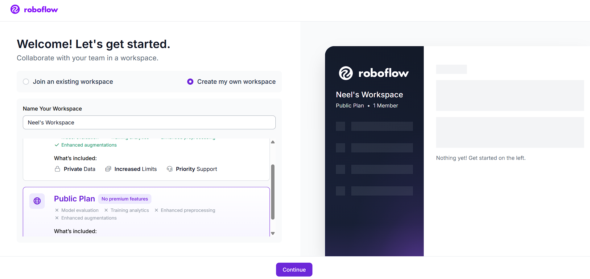
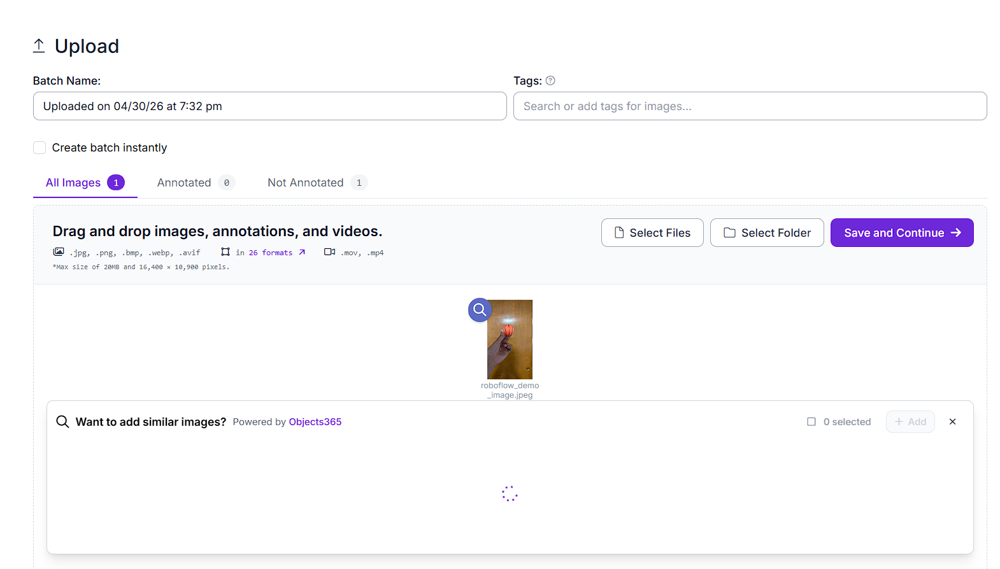
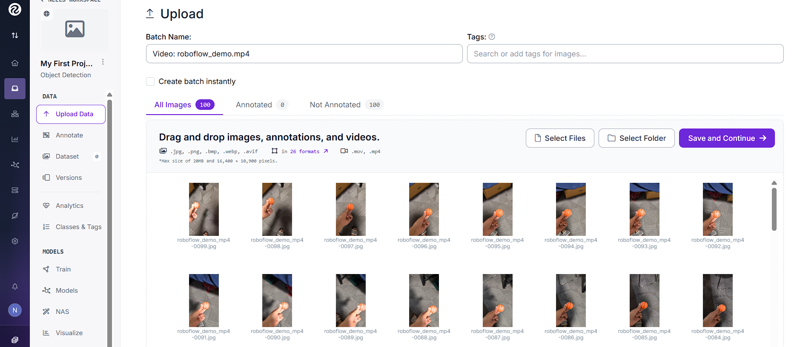
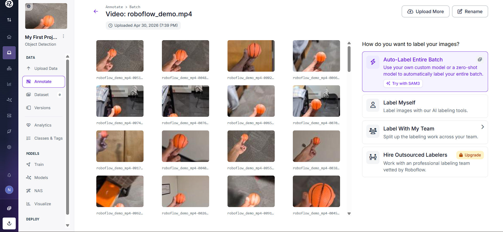
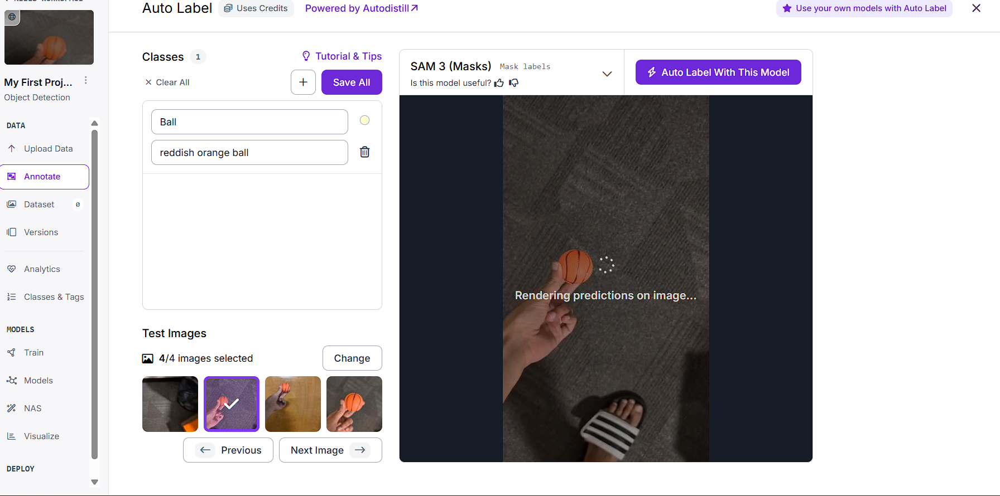
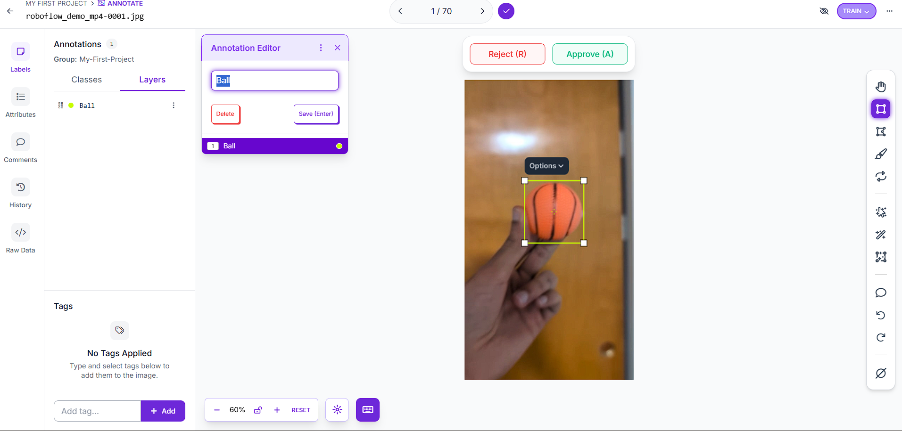
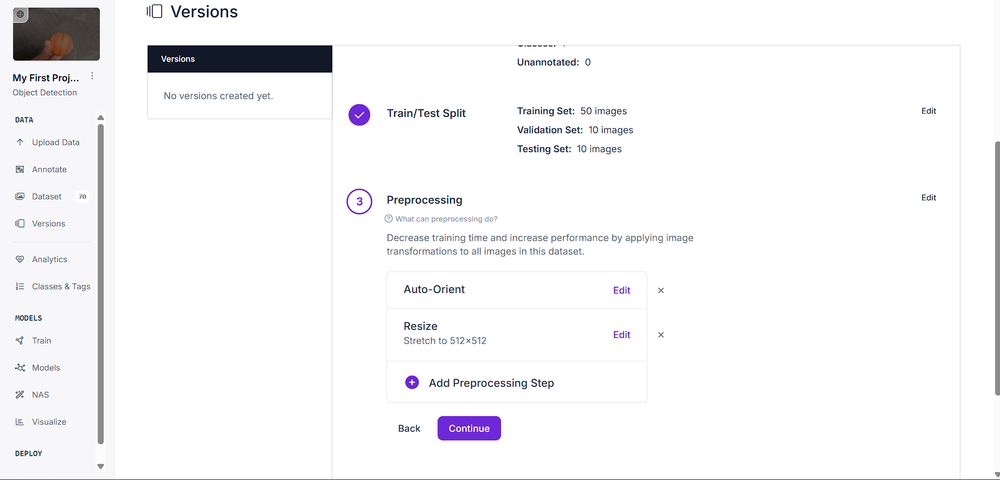
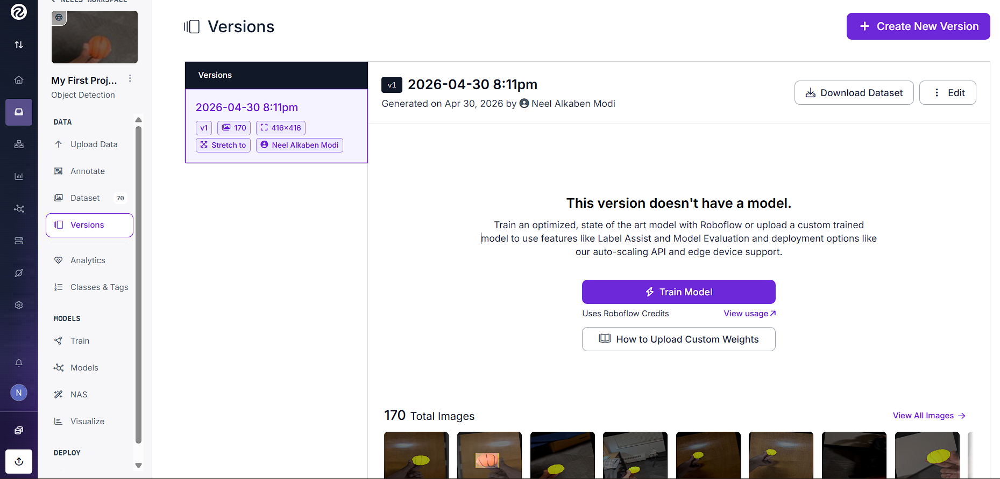
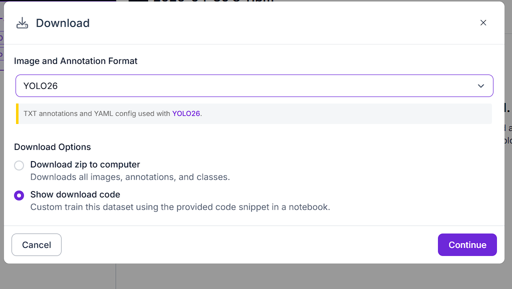

A browser-based course dashboard for learning Python, machine learning, reinforcement learning, and computer vision through robotics-flavored examples.
You're a freshmen ME student. You may have never written a line of code. That's exactly who this guide is for.
Mechanical Engineering x AI
From zero Python to robotics ML projects
This page is a long-scroll textbook, lab manual, and project checklist. You will learn the programming basics, the core ML families, and how to run full notebooks in Google Colab without installing anything locally.
PythonGoogle ColabBrowser toolsRobotics sensors
0
SetupBrowser tools, Colab later, how to read this guide
1
PythonVariables, loops, functions, libraries
2
ML conceptsSupervised, unsupervised, reinforcement
3
Applied MLTraining, evaluating, and interpreting models
4
VisionOpenCV, CNNs, and image data
Chapter 0: Welcome & How to Use This Guide › What You Will Build
What You Will Build
Beginner6 min
What You Will Build
This course builds the foundation you need to understand and use machine learning in robotics, even if you are starting with no programming background.
Python Confidence
Write and read basic Python, use notebooks, import libraries, and understand the code you run.
Data Thinking
Look at tables, sensor readings, labels, plots, and train/test splits the way an engineer would.
ML Intuition
Know when a problem is supervised, unsupervised, reinforcement learning, or computer vision.
Robotics Context
Connect models to mechanical systems, sensors, failures, vibration patterns, navigation, and images.
Later chapters turn those skills into applied notebook projects. Chapter 0 is only here to orient you: what tools you will use, how the course is organized, and how to read it without getting lost.
Chapter 0: Welcome & How to Use This Guide › Tools You Need
Tools You Need
Beginner10 min
Tools You Need: Zero Installation
For the Python fundamentals chapters you can run code directly in the browser on this page. For the machine learning and computer vision projects in later chapters you will use Google Colab, which gives you a free Python environment with no installation required.
Every section follows the same pattern: concept, code example, common mistake, and mini exercise. Open a blank Colab notebook and type the examples yourself.
Concept. Python is the default language of machine learning because the syntax is readable and the ecosystem is huge. NumPy, Pandas, scikit-learn, TensorFlow, PyTorch, OpenCV, and nearly every robotics ML example you find online will have Python support.
💡
About the code editors on this site
The code boxes on this page are yours to edit. You can change any line and press Run or Ctrl+Enter to see your version execute instantly in the browser.
Your browser saves recent edits locally, so reloading this page usually keeps your scratch work. Those edits are not permanent course files, do not sync to other devices, and can disappear if you clear site data. Use Reset to restore the original example, and keep serious work in a Colab notebook where it is saved to your Google Drive automatically.
When you press Run on a code block on this website, you are running CPython 3.12 compiled to WebAssembly via Pyodide. It is the same Python you would install on your laptop, not a simulation or a simplified version.
Available packages in the browser interpreter: NumPy, Pandas, Matplotlib, SciPy, and scikit-learn.
Not available in the browser because they are too large: TensorFlow, PyTorch, and OpenCV. Code cells that need those packages show an Open in Colab button instead. Colab gives you a full Linux machine with GPU access.
In Google Colab, you are running standard Python on a Google-managed Linux server. The exact default version can change over time, so check it with !python --version in a Colab cell. The beginner code in this course works in both places.
📝
Mini Exercise
Run print("Hello, Robot!") in Colab. Then change the message to include your name and your robot's name.
⚠️
Common Mistake
Do not worry about installing Python on your laptop yet. For this course, run the cells in Colab so everyone starts from the same environment.
Python vs Other Languages: Three Things That Will Surprise You
No curly braces: Python uses indentation
In C, C++, or Java, blocks of code are wrapped in curly braces { }. In Python, indentation, the spaces at the start of a line, is the structure. A block starts when indentation increases and ends when it goes back.
if battery < 10:
print("Low battery")
return_to_base()
Rule: Always use 4 spaces for each level of indentation. Do not mix spaces and tabs. Python will throw an IndentationError.
⚠️
IndentationError is common
If Python says unexpected indent or expected an indented block, look at the spaces at the start of the offending line.
No semicolons at the end of lines
Python does not need a semicolon at the end of each statement. One line equals one statement. Just press Enter and start the next line.
No type declarations: Python figures out the type itself
In C++ you write int wheels = 4;. In Python you write wheels = 4.
Python looks at the value 4 and knows it is an integer automatically. This is called dynamic typing. You never need to write the type name when creating a variable. However, Python still has types. You just do not have to declare them. You can always check with print(type(wheels)), which prints <class 'int'>.
Variable
A named container in memory that holds a value. Think of it as a labelled box for robot data.
1.2 Variables & Data Types
Concept. A variable is a named box that holds a value. Python has four beginner-friendly basic types: int for whole numbers, float for decimals, str for text, and bool for true/false values.
The Colab notebook contains every code cell from this lesson in order, exactly as shown on this page. It opens pre-filled so you can run cells top to bottom, modify them, and save your own copy to Google Drive with File → Save a copy in Drive.
Robot sensor variables
# Robot sensor variables
distance = 2.45 # float - distance in meters
is_obstacle = True # bool - obstacle detected?
robot_name = "ARIA" # str - robot's name
wheels = 4 # int - number of wheels
print(type(distance))
print(type(is_obstacle))
print(f"{robot_name} sees an obstacle at {distance:.1f}m: {is_obstacle}")
Line
What it does
distance = 2.45
Creates a variable named distance and stores a decimal number, which Python calls a float.
is_obstacle = True
Stores a boolean value. Booleans are either True or False.
robot_name = "ARIA"
Stores text as a string. Strings are wrapped in quotes.
wheels = 4
Stores a whole number, which Python calls an int.
print(type(distance))
Prints the Python type of the value stored in distance.
f"{robot_name} ..."
Uses an f-string to insert variable values into a readable message.
Type conversion changes one type into another: int("42"), str(3.14), and float("2.0"). An f-string lets you insert variables into a string: f"The sensor reads {value:.2f} meters".
💡
Tip
Python is case-sensitive. Distance and distance are different variables.
⚠️
Common Mistake
Do not mix types unexpectedly. "5" + 5 will crash. Use int("5") + 5 instead.
📝
Mini Exercise
Declare 3 variables for a robot: speed as a float, battery level as an int from 0-100, and current task as a string. Print a status report using an f-string.
Chapter 1: Python Programming Fundamentals › 1.3 Data Structures
1.3 Data Structures
Beginner16 min
Data Structure
A container pattern for organizing related values, such as lists of readings or dictionaries of robot state.
1.3 Data Structures: Lists, Tuples, Sets, Dictionaries
Concept. Data structures are containers. They let you keep related values together instead of creating a separate variable for everything.
The Colab notebook contains every code cell from this lesson in order, exactly as shown on this page. It opens pre-filled so you can run cells top to bottom, modify them, and save your own copy to Google Drive with File → Save a copy in Drive.
Lists
A list is ordered and mutable. Use it for values that arrive over time, like ultrasonic sensor readings.
Key operations: indexing with my_list[0], negative indexing with my_list[-1], slicing with my_list[1:3], and methods like .append(), .remove(), .pop(), and .sort(). Use len(my_list) for length.
When you call robot_state.items(), Python gives you back each key-value pair as a small tuple: ("name", "ARIA"), ("battery", 87), and so on. The line for key, value in robot_state.items(): uses tuple unpacking. Each pair is split into key and value automatically on every loop iteration.
Line
What it does
robot_state = { ... }
Creates a dictionary. Each entry has a key on the left and a value on the right.
robot_state['battery']
Looks up the value stored under the key "battery". This crashes if the key does not exist.
robot_state["battery"] -= 5
Subtracts 5 from the existing battery value and stores the result back in the dictionary.
robot_state["location"] = (3.1, 4.2)
Adds a new key-value pair. The location value is a tuple.
robot_state.get("camera", "not installed")
Safely asks for a key. If "camera" is missing, Python returns the default value instead of crashing.
for key, value in robot_state.items():
Loops through key-value pairs. .items() returns pairs, and tuple unpacking splits each pair into two variables.
⚠️
Common Mistake
robot_state["camera"] crashes if the key does not exist. Use .get("camera", "not installed") when a key is optional.
📝
Mini Exercise
Create a dictionary representing a robot with at least 5 attributes. Decrease the battery by 10 and print all keys that have numeric values.
Chapter 1: Python Programming Fundamentals › 1.4 Control Flow
1.4 Control Flow
Beginner10 min
Control Flow
The part of a program that decides which code runs based on conditions.
1.4 Control Flow: if / elif / else
Concept. Control flow lets your program make decisions. Comparisons include ==, !=, <, >, <=, and >=. Logical operators include and, or, and not.
Battery and obstacle decisions
battery = 23
distance_to_obstacle = 0.4
if battery < 10:
print("CRITICAL: Return to base immediately!")
elif battery < 25:
print("WARNING: Low battery. Finish current task and return.")
if distance_to_obstacle < 0.5:
print("ALSO: Obstacle too close - slow down!")
else:
print("Battery OK. Continuing mission.")
safe_zones = {"base", "charging_dock", "lab_entrance"}
current_zone = "charging_dock"
if current_zone in safe_zones:
print(f"{current_zone} is a safe zone. Power down.")
Line
What it does
battery = 23
Stores the current battery level as an integer.
distance_to_obstacle = 0.4
Stores a sensor reading as a float in meters.
if battery < 10:
Starts the first decision branch. The indented line below it runs only if this condition is true.
elif battery < 25:
Checks a second condition only if the first condition was false.
if distance_to_obstacle < 0.5:
Starts a nested if. It is indented one extra level because it belongs inside the low-battery branch.
else:
Runs only when the earlier battery conditions were false.
Uses in to test whether the current zone appears in the set.
⚠️
Nested indentation
The obstacle check is indented one more level because it only runs inside the elif battery < 25 branch. If it lined up with elif, it would be a separate decision instead.
💡
Tip
Use elif instead of multiple if blocks when conditions are mutually exclusive. It is clearer and avoids accidental double responses.
📝
Mini Exercise
Write a function that takes a distance reading in meters and prints STOP if it is under 0.3m, SLOW DOWN if it is under 0.8m, and ALL CLEAR otherwise.
A programming structure that repeats work over a collection or until a condition changes.
1.5 Loops: for and while
Concept. Loops repeat work. Use for when you know what collection you are walking through. Use while when you repeat until a condition changes.
You will also see continue to skip the rest of the current loop iteration and zip() to walk through two lists together, such as timestamps and readings.
The Colab notebook contains every code cell from this lesson in order, exactly as shown on this page. It opens pre-filled so you can run cells top to bottom, modify them, and save your own copy to Google Drive with File → Save a copy in Drive.
For loops
For loops with enumerate and zip
sensor_log = [1.5, 0.8, 2.3, 0.2, 1.9]
timestamps = ["00:00", "00:05", "00:10", "00:15", "00:20"]
print("Scanning sensor log...")
for i, reading in enumerate(sensor_log):
if reading < 0.5:
print(f" Reading #{i}: {reading:.1f}m - DANGER")
else:
print(f" Reading #{i}: {reading:.1f}m - OK")
print("\nReadings with timestamps:")
for time, reading in zip(timestamps, sensor_log):
print(f" {time}: {reading:.1f}m")
Line
What it does
sensor_log = [...]
Stores the readings in a list so the loop can visit them one at a time.
timestamps = [...]
Stores matching time labels in a second list.
for i, reading in enumerate(sensor_log):
enumerate() returns two values each time: the index and the reading. Python unpacks them into i and reading.
if reading < 0.5:
Checks the current reading and chooses the danger message when the obstacle is close.
for time, reading in zip(timestamps, sensor_log):
zip() walks through two lists together and returns pairs like ("00:00", 1.5).
While loops
While loop: battery until destination
battery = 100
distance_traveled = 0.0
while battery > 20:
battery -= 5
distance_traveled += 0.3
if distance_traveled >= 1.2:
print(f"Destination reached! Battery remaining: {battery}%")
break
else:
print(f"Battery too low! Only traveled {distance_traveled:.1f}m")
Line
What it does
battery = 100
Starts the simulated battery at 100 percent.
while battery > 20:
Repeats the indented block as long as the condition remains true.
battery -= 5
Subtracts 5 from the battery each loop. This moves the loop toward stopping.
distance_traveled += 0.3
Adds another 0.3 meters to the simulated trip.
break
Exits the loop immediately when the destination is reached.
else:
Runs only if the while loop ended naturally, not if it ended with break.
List Comprehensions: a One-Line Loop
A list comprehension is a shorthand way to build a new list from an existing one, all in one line. It looks unusual at first, but it follows a fixed pattern you can memorize.
new_list = [ expression for item in existing_list if condition ]
new_list = []
for item in existing_list:
if condition:
new_list.append(expression)
Expression. The value to put into the new list. In the long version, this is the value passed into .append().
Existing list. The collection Python loops through. In the long version, it appears after for item in.
Condition. The optional test that decides whether an item is included. If the condition is false, that item is skipped.
List comprehensions: a one-line loop
# Long version (normal for loop)
raw_readings = [1.5, -0.2, 0.9, 2.1, -0.1]
clean_readings_long = [] # start with empty list
for r in raw_readings: # go through every item
if r > 0: # only keep positive values
clean_readings_long.append(r) # add to new list
print("Long version:", clean_readings_long)
# Short version (list comprehension - identical result)
clean_readings_short = [r for r in raw_readings if r > 0]
# keep r for every r only if r > 0
print("Short version:", clean_readings_short)
# Another example: convert all readings from meters to centimeters
in_cm = [r * 100 for r in clean_readings_short]
print("In cm:", in_cm)
Line
What it does
clean_readings_long = []
Creates an empty list that the long loop will fill.
for r in raw_readings:
Visits each raw reading one at a time.
if r > 0:
Filters out invalid negative readings.
clean_readings_long.append(r)
Adds the valid reading to the new list.
[r for r in raw_readings if r > 0]
Does the same loop, filter, and append operation in one line.
[r * 100 for r in clean_readings_short]
Builds a new list by converting each meter reading to centimeters. There is no filter this time.
💡
Reading list comprehensions
When you see [something for x in something_else], that is a list comprehension. Read it as: build a list by taking x from something_else, and optionally filtering. Once you spot the pattern, it becomes easy to read.
⚠️
Common Mistake
A while loop can run forever if the condition never changes. Make sure something inside the loop moves the program toward stopping.
📝
Mini Exercise
Use a for loop to count how many motor temperatures are above 80°C and calculate the average temperature. Then rewrite the filtering step as a list comprehension.
A reusable block of code with a name, inputs, and often a returned result.
1.6 Functions
Concept. Functions package reusable behavior. They make code easier to test, read, and repair. A function can take parameters, use default values, and return a result.
The Colab notebook contains every code cell from this lesson in order, exactly as shown on this page. It opens pre-filled so you can run cells top to bottom, modify them, and save your own copy to Google Drive with File → Save a copy in Drive.
Anatomy of a Function
defanalyze_sensor_data(readings, danger_threshold=0.5):
"""
Analyze a list of sensor readings.
Returns a summary dictionary.
"""clean = [r for r in readings if r > 0]return {"min": min(clean)}
def keyword. Tells Python that the next block defines a function.
Function name. This is the name you call later, such as analyze_sensor_data(data).
Required parameter.readings has no default, so the caller must provide it.
Optional parameter.danger_threshold can be provided by the caller, but it also has a fallback value.
Default value. If the caller does not pass danger_threshold, Python uses 0.5.
Docstring. Triple-quoted text that documents what the function does.
Function body. The indented code that runs when the function is called.
Return line. Sends a value back to whoever called the function.
Function: analyze robot sensor readings
def analyze_sensor_data(readings, danger_threshold=0.5, unit="m"):
"""
Analyze a list of sensor readings and return a summary.
"""
if not readings:
return {"error": "No readings provided"}
clean = [r for r in readings if r > 0]
return {
"min": min(clean),
"max": max(clean),
"average": sum(clean) / len(clean),
"danger_count": sum(1 for r in clean if r < danger_threshold),
"unit": unit
}
data = [1.2, 0.3, 0.8, 0.4, 2.1, 0.1, -0.5, 1.6]
result = analyze_sensor_data(data, danger_threshold=0.5)
print(f"Min distance: {result['min']:.2f}{result['unit']}")
print(f"Max distance: {result['max']:.2f}{result['unit']}")
print(f"Average: {result['average']:.2f}{result['unit']}")
print(f"Danger events: {result['danger_count']}")
Line
What it does
def analyze_sensor_data(...):
Defines a reusable function with three parameters. danger_threshold and unit have default values.
"""Analyze ..."""
Documents the function with a docstring. Python ignores it during normal execution, but tools can display it as help text.
if not readings:
Checks for an empty list. Empty lists count as false in Python.
clean = [r for r in readings if r > 0]
Uses a list comprehension to keep only positive readings.
return { ... }
Returns a dictionary containing several named summary values.
sum(1 for r in clean if r < danger_threshold)
Counts readings below the danger threshold by adding one for each matching reading.
result = analyze_sensor_data(...)
Calls the function and stores its returned dictionary in result.
Commenting
Python has two ways to write comments. Comments are ignored by Python. They exist only for humans reading the code.
Single-line comment: anything after a # on a line is a comment. Multi-line comment: wrap text in triple quotes """ ... """. When used at the start of a function, this is called a docstring.
Commenting and docstrings
# This is a single-line comment. Python ignores everything after the #.
distance = 2.45 # you can also put a comment at the end of a line
"""
This is a multi-line comment (also called a docstring when it appears
at the start of a function or file).
Python does not execute any of this text.
"""
def get_battery_warning(level):
"""
Return a warning string based on battery level.
level: int from 0 to 100
Returns: str
"""
if level < 10:
return "CRITICAL"
elif level < 25:
return "LOW"
return "OK"
print(get_battery_warning(8))
print(get_battery_warning(50))
Line
What it does
# This is a single-line comment
Starts a comment. Python skips the rest of the line.
distance = 2.45 # ...
Stores a number, then adds a human note after the code.
""" ... """
Creates a multi-line string. At the top of a function, this becomes a docstring.
def get_battery_warning(level):
Defines a function with one required parameter.
return "CRITICAL"
Stops the function and sends the string back to the caller.
Returning Multiple Values
Most languages need special syntax to return more than one value from a function. In Python, you just separate values with a comma. Python automatically packs them into a tuple and unpacks them on the other side.
Returning multiple values
def analyze_motor(temperature, rpm):
"""
Check motor health. Returns two values: a status string and a boolean.
"""
is_overheating = temperature > 80
if temperature > 90:
status = "SHUTDOWN"
elif temperature > 80:
status = "WARNING"
else:
status = "OK"
return status, is_overheating # returning TWO values, separated by a comma
# Method 1: capture both values into two variables
motor_status, overheating = analyze_motor(85, 3000)
print(f"Status: {motor_status}") # WARNING
print(f"Overheating: {overheating}") # True
# Method 2: capture as a single tuple (Python packs them automatically)
result = analyze_motor(65, 2800)
print(f"Full result tuple: {result}") # ('OK', False)
print(f"Just the status: {result[0]}") # OK
Line
What it does
return status, is_overheating
Returns two values. Python wraps them in a tuple automatically, such as ("WARNING", True).
motor_status, overheating = analyze_motor(...)
Uses tuple unpacking. Python splits the tuple and assigns the first value to motor_status and the second to overheating.
result = analyze_motor(65, 2800)
Stores the whole returned tuple in one variable.
result[0]
Reads the first item from the tuple.
Positional vs Named Arguments
Positional vs named arguments
def set_robot_speed(speed, unit="m/s", silent=False):
"""Set robot speed. unit defaults to m/s, silent defaults to False."""
if not silent:
print(f"Setting speed to {speed} {unit}")
return speed
# POSITIONAL: arguments matched by their position in the definition
set_robot_speed(1.5)
set_robot_speed(2.0, "km/h")
# NAMED: arguments matched by name, order does not matter
set_robot_speed(speed=1.5, silent=True)
set_robot_speed(silent=True, speed=1.5)
set_robot_speed(1.5, silent=True, unit="mph")
# DEFAULT VALUES: if you do not pass an argument, Python uses the default.
Line
What it does
speed
Required parameter. The caller must provide this. Omitting it causes a TypeError.
unit="m/s"
Optional parameter with a default value. If the caller does not pass it, Python uses "m/s".
silent=False
Another optional parameter. It defaults to False.
set_robot_speed(2.0, "km/h")
Passes positional arguments. Python matches them left to right.
set_robot_speed(silent=True, speed=1.5)
Passes named arguments. Order does not matter because the names identify the parameters.
set_robot_speed(1.5, silent=True, unit="mph")
Mixes styles. Positional arguments must come first, then named arguments.
💡
Parameter order rule
Required parameters with no default must always come before optional parameters with defaults in the function definition.
*args and **kwargs
You do not need to write functions with *args or **kwargs yourself yet. But you will see them when you look at library documentation. Here is just enough to recognize them.
*args and **kwargs
# *args collects any number of positional arguments into a tuple
def print_all_readings(*args):
"""Accept any number of readings."""
for reading in args:
print(f" {reading}m")
print_all_readings(1.2, 0.9, 1.5, 2.1)
# **kwargs collects any number of named arguments into a dictionary
def configure_robot(**kwargs):
"""Accept any named settings."""
for key, value in kwargs.items():
print(f" {key} = {value}")
configure_robot(speed=1.5, task="mapping", battery=87)
Line
What it does
def print_all_readings(*args):
Collects any number of extra positional arguments into a tuple named args.
for reading in args:
Loops through every value that was passed in.
def configure_robot(**kwargs):
Collects any number of named arguments into a dictionary named kwargs.
kwargs.items()
Returns key-value pairs so the loop can unpack each setting name and value.
💡
Names are convention
The names *args and **kwargs are convention, not keywords. The * and ** are what matter. You could write *values or **settings, but use *args and **kwargs so other developers recognize the pattern.
💡
Scope
Variables created inside a function are local. Code outside the function cannot see them unless the function returns them.
⚠️
Common Mistake
Printing a value is not the same as returning it. If another part of your program needs the result, use return.
📝
Mini Exercise
Write convert_speed(value, from_unit, to_unit) to convert between m/s, km/h, and mph. Return the converted value and print a formatted message.
A package of reusable code written by other developers so you do not rebuild common tools from scratch.
1.7 Libraries & Imports
Concept. A library is code someone else packaged so you do not have to rebuild everything from scratch. In Colab, common ML libraries are already installed. For anything missing, you can run !pip install package_name.
Installing and Importing Libraries
Python comes with a set of built-in tools called the standard library: things like math, random, datetime, and os. But the tools we need for machine learning, such as NumPy, Pandas, Matplotlib, and scikit-learn, are third-party packages. Other developers wrote them and published them for free.
All Python packages live on a public registry called PyPI. When you run !pip install numpy, pip, Python's package manager, downloads NumPy from PyPI and installs it.
The ! at the start of a line in a Colab cell means: run this as a shell command, not as Python. You run it in a Colab code cell, not in a Python file.
Colab package install command
!pip install numpy pandas matplotlib scikit-learn
After running that cell, those packages are available for the rest of your Colab session. You do not need to install them again until you start a new session.
💡
Most common packages are already installed
Most packages come pre-installed in Google Colab. You only need !pip install for packages that are less common. If you try to import something and see ModuleNotFoundError, that is your signal to run !pip install package-name first.
The install name and the import name are sometimes different. Here are the package names used in this course.
What we call it
pip install command
import statement
NumPy
!pip install numpy
import numpy as np
Pandas
!pip install pandas
import pandas as pd
Matplotlib
!pip install matplotlib
import matplotlib.pyplot as plt
Scikit-learn
!pip install scikit-learn
from sklearn import ...
OpenCV
!pip install opencv-python
import cv2
TensorFlow
!pip install tensorflow
import tensorflow as tf
OpenAI Gym
!pip install gymnasium
import gymnasium as gym
Note: The install name scikit-learn is different from the import name sklearn. This is the most common source of confusion. Always look up the correct import name in the library's official documentation.
Robotics data is often arrays: images, lidar scans, sensor logs, joint angles, and motor current. NumPy is the shared foundation underneath most of those tools.
⚠️
Common Mistake
import numpy works, but the standard nickname is import numpy as np. Most tutorials assume that alias.
📝
Mini Exercise
Create a NumPy array of 10 motor current readings. Print the average, maximum, and how many readings are above a safety threshold you choose.
The task. A robot has been collecting data for 30 minutes. You are given a raw log as a list of dictionaries. Parse it, clean it, and produce a summary report.
The Colab notebook contains every code cell from this lesson in order, exactly as shown on this page. It opens pre-filled so you can run cells top to bottom, modify them, and save your own copy to Google Drive with File → Save a copy in Drive.
Run this cell first. It creates the simulated robot log you will analyze. You do not need to understand every line right now. Just run it and move on.
The variable robot_log now contains 30 minutes of sensor data. Your job is to analyze it. Try the exercise yourself before opening the solution.
📝
Exercise
Write analysis code that does the following: count total entries and sensor errors, filter out distance == -1 entries, find the highest motor temperature and its task, calculate average battery drain per minute, use a set to find unique tasks, and print a formatted report using f-strings.
📝
Self-check
[ ] Did you use a function? [ ] Did you use a list comprehension? [ ] Did you use a dictionary for the summary? [ ] Is your output clearly formatted?
Imagine teaching a robot to catch a ball. The old way: you write thousands of rules like "if ball is at x=50 and moving left at 3 m/s, move arm to position y=120." That is impossible to get right. Machine learning is a completely different idea.
Instead of programming rules, you feed the robot examples and let it figure out the rules itself. Show it 10,000 throws. It watches, finds patterns, and builds its own internal model of how to catch. That's machine learning: computers learning from data, not from explicit instructions.
🤖
The Robotics Angle
Almost every modern robot uses ML in some form: walking over rough terrain, recognizing tissue types, detecting pedestrians, sorting packages, or spotting defects on a factory line.
Projects You Will Build Later
Once you understand the concepts in this chapter and the chapters that follow, you will turn them into applied robotics notebooks like these.
⚙️
Robot Failure Predictor
Predict whether a machine is likely to fail from temperature, torque, speed, and wear readings.
Stack: Pandas, scikit-learn, Logistic Regression, Random Forest
📈
Sensor Cluster Analyzer
Group vibration windows into operating modes without labels, then interpret what each group means.
Stack: NumPy, FFT features, K-Means, PCA, DBSCAN
🚦
Traffic Sign Classifier
Train a convolutional neural network that recognizes real traffic signs for mobile robots.
Stack: OpenCV, TensorFlow/Keras, CNNs, GTSRB
Chapter 2: What is Machine Learning? › 2.1 Traditional Programming vs ML
2.1 Traditional Programming vs ML
Beginner6 min
2.1 Traditional Programming vs ML
Traditional Programming
Input: data + rules Output: answers
You write the logic. The computer follows it exactly.
Machine Learning
Input: data + answers Output: rules, also called a model
The computer learns the logic from examples.
Chapter 2: What is Machine Learning? › 2.2 Three Flavors of ML
2.2 Three Flavors of ML
Beginner8 min
2.2 Three Flavors of ML
🏷️
Supervised Learning
Learn from labeled examples. Example: sensor readings labeled as failed or healthy.
🔍
Unsupervised Learning
Find hidden structure without labels. Example: group vibration patterns into operating modes.
🎮
Reinforcement Learning
Learn through actions and rewards. Example: a robot learns a navigation policy by trial and error.
Chapter 2: What is Machine Learning? › 2.3 When to Use Which
2.3 When to Use Which
Beginner6 min
2.3 When to Use Which
Question
Use
Robotics Example
Do you have labeled answers?
Supervised learning
Predict failure from known historical failures.
Do you have raw data but no labels?
Unsupervised learning
Cluster sensor behavior into normal and unusual modes.
In classification, the model predicts a category, such as failure or normal. In regression, the model predicts a number, such as remaining useful life in hours.
Input features
→
Model prediction
→
Compare to label, adjust, repeat
Features
The inputs: air temperature, process temperature, rotational speed, torque, and tool wear.
Labels
The answer we want to predict: failure or no failure.
We split training and test data because the model must prove it can handle examples it did not memorize. Overfitting is like memorizing exam answers instead of understanding the material.
Accuracy
Overall percent correct.
Precision
When the model says failure, how often is it right?
Chapter 3 is the first place where you need Kaggle datasets. Set up the free account and token here, then the project notebooks will show exactly where to paste the copied token text.
Go to Kaggle and sign in. Open kaggle.com and sign in to your account.
Open Settings. Click your profile picture, then click Settings.
Create a token. Scroll to the API section and click Create New Token.
Copy the token text. A dialog appears showing your API credentials. Click the Copy button to copy the token text.
Paste it in Colab. In Colab, you will paste this into a setup cell. The project notebooks explain exactly where.
💡
Keep the token private
Your Kaggle API token is tied to your account. Paste it only into your own Colab session and do not share notebooks while the token text is visible.
Use the token text you copied from Kaggle. Cell 1 asks you to paste it once for this Colab session and writes it to the credentials location the Kaggle command expects.
Cell-by-cell notebook
Cell 1: Install Kaggle API & set up credentials
!pip -q install kaggle
import json
import os
from getpass import getpass
os.makedirs("/root/.kaggle", exist_ok=True)
token = json.loads(getpass("Paste your Kaggle API token text: ").strip())
with open("/root/.kaggle/kaggle.json", "w") as f:
json.dump(token, f)
os.chmod("/root/.kaggle/kaggle.json", 0o600)
💡
Why this step?
Colab needs your Kaggle token before it can download dataset files. This cell stores the copied token text only inside the current Colab session.
Expected outputA hidden prompt appears. After you paste the copied token text, the credentials are installed for this Colab session.
Cell 2: Download the dataset from Kaggle
!kaggle datasets download -d stephanmatzka/predictive-maintenance-dataset-ai4i-2020
!unzip -o predictive-maintenance-dataset-ai4i-2020.zip -d data
💡
Why this step?
The command pulls the zipped CSV into Colab and extracts it into a local data folder.
Expected outputOne CSV file appears under data/.
Cell 3: Import libraries
import numpy as np
import pandas as pd
import matplotlib.pyplot as plt
from sklearn.model_selection import train_test_split
from sklearn.preprocessing import StandardScaler
from sklearn.linear_model import LogisticRegression
from sklearn.ensemble import RandomForestClassifier
from sklearn.metrics import classification_report, ConfusionMatrixDisplay, f1_score
💡
Why this step?
Pandas handles tables, Matplotlib draws charts, and scikit-learn provides splitting, scaling, models, and metrics.
Expected outputNo printed output if imports succeed.
Think of it this way: your test set is the final exam — questions the model has never seen. Your training set is the practice material the model learns from.
If you fit the scaler on the full dataset (training + test combined), the scaler learns statistics like the mean and range from the test data too. That means the model indirectly gets a sneak peek at the exam before sitting it — giving you an artificially optimistic accuracy score that won't hold up in the real world.
Always fit the scaler only on training data, then use that same scaler to transform both training and test data. The test set must stay completely unseen until the final evaluation.
Expected outputNo printed output; scaled arrays are ready.
Unsupervised learning finds structure when nobody has labeled the rows. That makes it valuable for sensor streams, vibration logs, and exploratory robotics data.
Clustering groups similar rows. If a motor has normal, imbalanced, and loose modes, vibration windows may naturally form three groups even without labels.
PCA reduces many features into two or three axes so humans can visualize high-dimensional data. It does not magically explain the system, but it helps you inspect patterns.
🤖
Robotics Connection
When a robot enters a new environment, unlabeled sensor patterns are often the first clue that something changed.
Chapter 4: Unsupervised Learning › 4.2 K-Means Deep Dive
4.2 K-Means Deep Dive
Beginner10 min
4.2 K-Means Deep Dive
1. Random init
Place K centroids randomly.
2. Assign
Assign each point to the nearest centroid.
3. Recompute
Move each centroid to the average of its assigned points.
4. Converge
Repeat until assignments stop changing.
Use the Elbow Method to choose K: plot inertia for K=1 to 10. The elbow is where extra clusters stop helping much. Use DBSCAN when clusters are odd shapes or when you do not know K.
RL is different from supervised learning because there is no answer key for every state. The agent must explore, make mistakes, and learn from reward signals.
Real robotics uses RL in legged locomotion, drone control, robotic surgery research, dexterous manipulation, and simulation-to-real training.
Chapter 5: Reinforcement Learning › 5.2 Q-Learning Explained with a Grid
5.2 Q-Learning Explained with a Grid
Intermediate12 min
5.2 Q-Learning Explained with a Grid
A Q-table stores the expected value of taking each action in each state. In FrozenLake, there are 16 grid states and 4 actions, so the table is 16 x 4.
Q-learning update equation
Q(s, a) <- Q(s, a) + alpha [ r + gamma * max Q(s', a') - Q(s, a) ]
old value rate reward discount best future value
s: current state.
a: action chosen.
alpha: learning rate, or how aggressively we update.
r: immediate reward.
gamma: discount factor for future rewards.
Exploration vs exploitation is the central tradeoff. Early on, the agent flips a biased coin and explores random moves often. Later, it mostly exploits the best actions it has learned.
Chapter 5: Reinforcement Learning › 5.3 Project: Teaching a Robot to Navigate a Maze
5.3 Project: Teaching a Robot to Navigate a Maze
Intermediate30 min
5.3 ★ Project: Teaching a Robot to Navigate a Maze
Environment: OpenAI Gym / Gymnasium FrozenLake-v1. The notebook logs rewards to CSV, uploads them as a Kaggle dataset, and loads them back for analysis.
⬇
Download Dataset
This project generates frozenlake_training_log.csv. Upload or retrieve logs through kaggle.com/datasets.
Converts best actions into arrows so you can inspect the learned navigation plan.
Expected outputA 4x4 grid of arrows.
Cell 8: Test trained agent
state, info = env.reset(seed=7)
done = False
while not done:
action = np.argmax(q_table[state])
state, reward, terminated, truncated, info = env.step(action)
done = terminated or truncated
print(env.render())
print("Final reward:", reward)
💡
What this does
Runs one greedy episode using the learned policy instead of random exploration.
Expected outputSeveral grid frames and a final reward of 0 or 1.
Cell 9: Kaggle tie-in - save and upload log
log_df.to_csv("frozenlake_training_log.csv", index=False)
print("Saved frozenlake_training_log.csv")
# Optional: create a Kaggle dataset manually from this CSV,
# then use the Kaggle API to download it in a future notebook.
💡
What this does
The CSV turns your RL experiment into a dataset you can share and re-analyze.
Expected outputA saved CSV file in Colab's file browser.
Cell 10: Challenge - larger map or non-slippery ice
# Try one change at a time:
env = gym.make("FrozenLake-v1", map_name="8x8", is_slippery=True, render_mode="ansi")
# or
env = gym.make("FrozenLake-v1", is_slippery=False, render_mode="ansi")
📝
What this does
The 8x8 map is harder. Turning slipperiness off isolates planning from randomness.
Expected outputA changed environment; rerun training and compare reward curves.
Chapter 6: Computer Vision for Robotics › Computer Vision for Robotics
Computer Vision for Robotics
Beginner6 min
Computer Vision
Techniques that let computers interpret images and video as useful sensor data.
Computer Vision for Robotics: Traffic Sign Classifier
Computer vision lets robots use cameras as sensors. This chapter replaces the old MNIST demo with a real traffic sign classification project.
Chapter 6: Computer Vision for Robotics › 6.1 Why Vision Matters in Robotics
6.1 Why Vision Matters in Robotics
Beginner6 min
6.1 Why Vision Matters in Robotics
Cameras are cheap, rich sensors. Robots use vision to read signs, detect obstacles, estimate pose, inspect parts, track lanes, and understand human workspaces.
Chapter 6: Computer Vision for Robotics › 6.2 Tools: OpenCV
6.2 Tools: OpenCV
Beginner12 min
6.2 Tools: OpenCV
OpenCV is the Open Source Computer Vision Library, the general-purpose toolkit for image processing. An image is a NumPy array: height x width x color channels.
OpenCV loads images as BGR. Matplotlib expects RGB. Convert before displaying or colors look wrong.
Chapter 6: Computer Vision for Robotics › 6.3 Tools: TensorFlow/Keras
6.3 Tools: TensorFlow/Keras
Beginner10 min
6.3 Tools: TensorFlow/Keras
TensorFlow is Google's library for building and training neural networks. Keras is the friendly wrapper on top, like power steering on a car. You will use tensors, layers, models, epochs, batches, loss functions, and optimizers.
Input image
→
Layers stacked in order
→
Class probabilities
Chapter 6: Computer Vision for Robotics › 6.4 How CNNs See
6.4 How CNNs See
Intermediate12 min
6.4 How Convolutional Neural Networks See
A normal neural network sees a flat list of pixels. A CNN scans small filters across the image, so it can learn edges, corners, textures, shapes, and eventually objects.
!pip -q install kaggle
import json
import os
from getpass import getpass
os.makedirs("/root/.kaggle", exist_ok=True)
token = json.loads(getpass("Paste your Kaggle API token text: ").strip())
with open("/root/.kaggle/kaggle.json", "w") as f:
json.dump(token, f)
os.chmod("/root/.kaggle/kaggle.json", 0o600)
!kaggle datasets download -d meowmeowmeowmeowmeow/gtsrb-german-traffic-sign
!unzip -q -o gtsrb-german-traffic-sign.zip -d gtsrb
💡
What this does
Downloads and extracts the traffic sign dataset into Colab.
Expected outputFolders containing sign images and labels.
Cell 2: Explore dataset
from pathlib import Path
import pandas as pd
import matplotlib.pyplot as plt
train_csv = Path("gtsrb/Train.csv")
df = pd.read_csv(train_csv)
display(df.head())
df["ClassId"].value_counts().sort_index().plot(kind="bar", figsize=(14, 4))
plt.title("Images per traffic sign class")
plt.show()
💡
What this does
Shows metadata and checks whether classes are balanced.
Expected outputA table and a 43-bar class count chart.
Cell 3: OpenCV preprocessing pipeline
import cv2
import numpy as np
from tensorflow.keras.preprocessing.image import ImageDataGenerator
images, labels = [], []
for _, row in df.iterrows():
path = Path("gtsrb") / row["Path"]
img = cv2.imread(str(path))
img = cv2.cvtColor(img, cv2.COLOR_BGR2RGB)
img = cv2.resize(img, (32, 32))
img = img.astype("float32") / 255.0
images.append(img)
labels.append(row["ClassId"])
X = np.array(images)
y = np.array(labels)
print(X.shape, y.shape)
Cell 3b: Data augmentation setup
augmenter = ImageDataGenerator(
rotation_range=10,
zoom_range=0.10,
horizontal_flip=True
)
# Use with care: horizontal flips can change the meaning of some traffic signs.
💡
What this does
Loads images, fixes color order, resizes to 32x32, normalizes pixels to 0-1, and defines simple augmentation for more varied training examples.
Expected output(num_images, 32, 32, 3) and labels.
You now have the map: Python basics, supervised learning, clustering, reinforcement learning, and computer vision. The next step is choosing the right tool for your own robotics problem.
Chapter 7: What's Next? › 7.1 Which ML Technique Should I Use?
7.1 Which ML Technique Should I Use?
Beginner8 min
7.1 Which ML Technique Should I Use?
Do you have labeled data?
YES → Supervised Learning Predicting a number? Regression. Predicting a category? Classification. Need explanation? Decision Tree or Logistic Regression. Need accuracy? Random Forest, Gradient Boosting, or CNN for images.
NO → Unsupervised Learning Know how many groups? K-Means. Odd shapes or unknown groups? DBSCAN. Visualize high-dimensional data? PCA or t-SNE.
Learning through interaction? Use Reinforcement Learning → Q-Learning → Deep Q-Network → PPO.
PointNet handles unordered 3D point clouds, which matter for lidar, depth cameras, and robot scene understanding.
★ Project A: Train Your First Detector › PA.0 What is Object Detection?
PA.0 What is Object Detection?
Prerequisite ProjectConcept10 min
Object detection is the bridge between computer vision and robot action. Instead of only asking what is in an image, the detector tells the robot where the target is, how confident the model is, and how large the object appears in the frame.
Image Classification
Given an image, output one label. Is this a cat or a dog? The model looks at the whole image and gives one answer.
Object Detection
Given an image, find every instance of target objects and draw a box around each one. Output: a list of boxes, each with a class name and a confidence score. This is what YOLO does.
Instance Segmentation
Like detection but instead of a box, draw the exact pixel outline of each object. More precise, much slower.
⚙
Why detection is right for tracking
For robot tracking, detection is the right choice. You need to know where the object is, using the bounding box center, and how big it appears, using box area as a proxy for distance. Classification alone cannot give you position. Segmentation is overkill and too slow for real-time control.
What A Bounding Box Actually Is
Every detection is a rectangle described by four numbers. You will see two formats often: corner coordinates for inference and normalized center coordinates for training labels.
Example: [120, 45, 380, 290]. Project 1 uses this format when reading YOLO output.
xywh: center format
[x_center, y_center, width, height], normalized from 0 to 1.
Example: [0.5, 0.3, 0.18, 0.24]. YOLO training labels use this format.
What A Confidence Score Is
YOLO proposes many candidate boxes. Each box gets a confidence score from 0 to 1, meaning how sure the model is that the box contains the target object. Boxes below the threshold are discarded.
0.0 many false positives0.5-0.6 sweet spot1.0 only obvious detections
★ Project A: Train Your First Detector › PA.1 Introducing YOLO26
PA.1 Introducing YOLO26
Prerequisite ProjectYOLO26n8 min
YOLO stands for You Only Look Once. It processes the whole image in a single forward pass through the neural network and produces all detections at once, which is why it is fast enough for real-time robotics.
Before YOLO-style detectors, many systems scanned an image with repeated sliding windows. That was accurate enough for some tasks but too slow for a robot that must react while moving. YOLO trades that repeated scanning for one direct prediction pass.
The YOLO Family
YOLO has moved through many generations: v1 through v8, then v9, v10, v11, and now YOLO26. Each generation improved the speed and accuracy tradeoff. In this course we use YOLO26 because the nano model is aimed at edge and low-power devices, which is the same constraint robots usually face.
For a simple task like detecting one object type against a clear background, such as a ball, mug, or cone, nano is genuinely enough. The limitation of a small model is usually crowded, complex scenes. Your first robot-tracking use case is intentionally simpler than that.
What End-To-End Means
Older YOLO versions needed a post-processing step called Non-Maximum Suppression to remove duplicate boxes. YOLO26 is designed to produce one clean prediction per object directly. In practice that means slightly faster inference, simpler code, and easier deployment on hardware with limited post-processing support.
⚙
Designed for edge deployment
YOLO26 was specifically designed for edge deployment: the same category as microcontrollers, embedded computers, and low-power laptops used around real robots. Learning it here transfers directly to deploying ML on physical hardware later.
★ Project A: Train Your First Detector › PA.2 Setting Up VS Code & Dependencies
PA.2 Setting Up VS Code & Dependencies
BeginnerRun locally14 min
💡
Already set up VS Code from Project 1?
If you already completed P1.1 and P1.2, you can skip the VS Code setup and jump to PA.3. This project comes first in the course order, so the full setup is included here.
Install VS Code. Go to code.visualstudio.com and install the free editor for Windows, macOS, or Linux.
Install the Python extension. Open VS Code, click Extensions, search for Python, and install the Microsoft extension.
Install Python. Use Python 3.10 or 3.11 for the smoothest package compatibility. On Windows, tick Add Python to PATH.
Create a folder. Make a new folder called my-detector. Keep it separate from the later object-tracker folder.
⚠
Windows PATH warning
If you skip Add Python to PATH, commands like python --version can fail with python is not recognized. Re-run the Python installer and tick that box.
pip and Virtual Environments
pip is Python's package manager. It downloads and installs libraries from the internet. A virtual environment is an isolated copy of Python just for this project, so packages installed here do not affect other Python projects on your machine.
Open the VS Code terminal in your my-detector folder and run these commands. After activation, the terminal prompt should start with (venv).
Terminal setup commands
python --version
python -m venv venv
venv\Scripts\activate # Windows
source venv/bin/activate # macOS / Linux
pip install ultralytics roboflow opencv-python
Package
Role in this project
ultralytics
Loads YOLO26, runs training, runs inference
roboflow
Downloads your labeled dataset from Roboflow in the right format
opencv-python
Opens your webcam and displays the detection results
Verify Installation
Create test_setup.py, type this code, and run python test_setup.py. If All good! prints, the environment is ready.
test_setup.pyRun locally
from ultralytics import YOLO
import cv2
import roboflow
print("All good!")
Download YOLO26n Weights
Create download_model.py and run it once. Ultralytics downloads yolo26n.pt automatically on the first run.
download_model.pyRun locally
from ultralytics import YOLO
model = YOLO("yolo26n.pt") # downloads automatically on first run
print(f"Model loaded. Parameters: {sum(p.numel() for p in model.model.parameters()):,}")
A parameter is one learned number inside the neural network. YOLO26n already learned millions of these numbers during its original training, and fine-tuning adjusts them toward your target object.
ℹ
What is COCO?
YOLO26n comes pre-trained on COCO, a dataset of 118,000 images covering 80 common object categories. We fine-tune this pre-trained model on your custom data. Fine-tuning keeps most of what the model already learned and adapts the last layers to your object, which is why you only need about 100-150 images instead of 100,000.
★ Project A: Train Your First Detector › PA.3 Creating Your Roboflow Project and Uploading Images
PA.3 Creating Your Roboflow Project and Uploading Images
RoboflowUpload Images18 min
Roboflow is a web platform that handles the three hardest parts of building a custom vision model: organizing your image data, drawing and managing labels, and exporting the dataset in the exact folder structure and file format your training code expects. You do not write any code in this lesson. Everything happens in a browser.
ℹ
Why not just use a folder of images?
YOLO training expects a very specific folder structure: a train folder, a valid folder, a test folder, each containing an images subfolder and a labels subfolder, plus a data.yaml file listing your class names. Getting this right manually is tedious and error-prone. Roboflow builds that entire structure automatically and also gives you augmentation, version control, and a three-line download snippet that works directly in your Colab notebook.
Step 1 — Create a free Roboflow account
Go to roboflow.com. Click Get Started in the top right corner.
Sign up with your Google account or an email address. Roboflow is free for public projects. You do not need to enter a credit card.
After signing up you will be asked to choose between two plans.

Choose the Public Plan to keep the project free.
Choose the Public Plan by clicking Continue with Public. The public plan is completely free and has everything needed for this course. The only difference from the paid plan is your dataset will be publicly visible on Roboflow Universe, which is fine for a learning project.
Step 2 — Skip the invite screen
Roboflow will ask if you want to invite collaborators to your workspace. You are working alone. Click Skip or continue without adding anyone.
Step 3 — Create a new project
You will land on a screen asking you to create a project.
Create a public Object Detection project and enter your class label.
Project Name: use a name describing what you are detecting. Examples: tennis-ball-detector, orange-cone-tracker, red-mug-detector. Use lowercase and hyphens, no spaces.
Project Type: leave this as the default Object Detection. Do not change it. Object detection is what YOLO does: it finds objects and draws boxes around them with their coordinates.
What will your model identify: type one single word in lowercase, such as ball, cone, or mug. This exact word is what the model outputs when it detects your object. It must exactly match the TARGET_OBJECT variable in Project 1's code. One typo here means the tracker never responds to the detection.
Click Create Public Project to continue.
Step 4 — Choose the Traditional Model Builder
If you do not see this section then skip this.
After creating the project Roboflow shows two options. Choose Use Traditional Model Builder Instead.
Roboflow Rapid is a newer prompt-based tool that skips manual labeling. It is convenient but it is a black box: you would not learn what is actually happening. The Traditional Model Builder shows every step, which is what this course requires.
Step 5 — The upload screen
You should now see the main upload page with a drag-and-drop zone.
The upload screen is where images, videos, and folders are added.
This is where your images go. Keep this tab open in your browser and proceed to collect images in the next step.
Step 6 — Collecting your images before uploading
Before uploading anything you need images. Here is exactly how to collect good ones.
What object to use
Best choices
A tennis ball, orange ball, any brightly colored ball, a colored traffic cone or marker, or a specific mug, bottle, or toy you own.
Avoid first
Your hand or face, multiple similar-looking objects, or anything that changes shape dramatically like cloth or paper.
⚙
Why a ball works well
A ball is the classic choice for a reason. It looks roughly the same from every angle because it is spherical. A distinctive color separates it from most backgrounds. These two properties mean the model learns faster and needs fewer images than a complex multi-sided object.
How many images to capture
Target 150 images minimum. 200 to 300 gives noticeably better results. This sounds like a lot but it takes about 10 minutes with a phone.
How to capture them
Distances: take shots from 0.3m away, 1m away, 2m away, and 3m away. The tracker needs to work at all these distances.
Angles: straight on, from the left, from the right, from above, and from slightly below. Objects look different from different angles.
Backgrounds: use at least 4 different locations: kitchen floor, carpet, concrete, grass, table. This is the most important variation.
Lighting: bright room with windows, dimmer room, artificial light, and slight shadow across the object. Real robots work in varied lighting.
Partial views: place the object half behind another object in some shots. The model needs to recognize the object even when partially blocked.
⚠
Vary your backgrounds deliberately
The single biggest beginner mistake is collecting all images in one location with one background color. The model will learn the background pattern instead of the object. It will detect perfectly in that room and fail completely everywhere else. Vary your backgrounds deliberately even if it feels unnecessary.
Use your phone camera. Take photos manually or record a short video and extract frames. Roboflow accepts both.
For video extraction: record a 30-second video walking around the object from different angles and distances. Roboflow will extract one frame per second automatically, giving you 30 images from one recording. Do this in 5 different locations for 150 images total.
Step 7 — Upload your images to Roboflow
Return to the Roboflow upload tab in your browser. Drag and drop your image files or your video files directly into the upload area. You can upload everything at once.

Uploaded images appear in the upload batch before saving.
If you upload a video, Roboflow asks how many frames per second to extract.
For video uploads, choose a frame rate that produces enough varied images.
For a 30-second walkthrough video choose as many frames per second as gives you around 80 images from one recording. For a longer video lower the rate to avoid too many nearly identical frames.
Click Choose Frame Rate to confirm. Roboflow processes the video and saves each extracted frame as a separate image in your project.
After uploading you will see all your images in a grid. Roboflow flags any images it cannot read.

After processing, Roboflow shows extracted frames in a grid.
Images marked Not Annotated in yellow have no labels yet. That is expected: you will label them in the next lesson.
Press Save and Continue. You will then see the annotation part.
Step 9 — Save and continue
Click Save and Continue in the upper right corner. Roboflow uploads and processes all your images. Depending on how many you uploaded this takes 30 seconds to 2 minutes.
When it finishes you will see the Annotate section of your project with your images ready to label. This is where the next lesson begins.
★ Project A: Train Your First Detector › PA.4 Labeling Your Images in Roboflow
PA.4 Labeling Your Images in Roboflow
RoboflowAuto-Label20 min
A label is a rectangle you draw around your object in each image. This rectangle tells the model exactly where the object is and what it is called. The model learns by comparing its own predicted boxes to your labeled boxes during training. If your labels are sloppy the model learns sloppiness. If they are tight and consistent the model learns to detect accurately.
There are two ways to label in Roboflow. The old way is to draw every box yourself by hand. The new way, which we will use, is to let Roboflow's AI label the entire batch automatically, then manually fix only the images it got wrong. This is 5 to 10 times faster and produces the same quality result.
Step 1 — Open the annotation section
In your Roboflow project click Annotate in the left sidebar. You will see three columns: Unassigned, Annotating, and Dataset.
Unassigned
Images just uploaded with no labels yet.
Annotating
Images currently being worked on.
Dataset
Fully labeled images ready for training.
All your uploaded images should appear in the Unassigned column.
Step 2 — Use Auto-Label to annotate the entire batch
Instead of opening images one by one, we will label everything at once using Roboflow's AI Auto-Label feature.
Click Auto-Label at the top of the Unassigned column. A panel opens on the right side of the screen.

Use Auto-Label Entire Batch to label the uploaded images at once.
Click Auto-label entire batch to apply to all your uploaded images at once rather than one at a time.
You will see two fields to fill in:
Class Name: type the exact class name you used when creating the project. For example: ball.
Description: write a short plain-English description of what your object looks like. Be specific. This description is what the AI uses to find your object in each image.
Good description example for a ball: A miniaturized basketball, small and orange with black lines, typically sitting on a flat surface.
Good description example for a cone: A bright orange traffic cone, roughly triangular, about 30cm tall.
The more specific your description the better the AI performs. Mention color, shape, size, and any distinctive markings.

Fill in the class name and a specific object description before generating test results.
Once you have filled in both fields, click Generate Test Results. Roboflow runs the AI on a small sample of your images so you can preview the quality before committing.
Review the test results. If the boxes look correct on the preview images, click Auto-Label to run on your full batch.
ℹ
About Auto-Label credits
Auto-labeling uses Roboflow's AI credits. A free account comes with 20 credits. Labeling one batch of 150 images uses 1 credit. You have more than enough for this project.
After auto-labeling finishes, the images move from Unassigned to the Annotating column. Roboflow has now drawn bounding boxes on every image it was confident about.
Step 3 — Review and fix images the AI got wrong
Auto-label is not perfect. Some images will have boxes in the wrong place, boxes that are too loose, or images where the object was missed entirely. You now go through and fix these manually.
In the Annotating column, look for images flagged with warnings or that look incorrect in the thumbnail. Click any image to open it in the annotation editor.
The annotation editor looks like this:

The annotation editor shows the image, class list, and bounding box controls.
If the box is in the right place and tight around the object: leave it as is and move to the next image.
If the box is wrong, click the box to select it and press Delete to remove it. Then draw a new one manually as described in Step 4.
If the object is in the image but no box was drawn, the AI missed it. Draw the box manually as described in Step 4.
Press the right arrow key to move to the next image. Press the left arrow key to go back.
ℹ
Fix the obvious errors first
You do not need to fix every single image perfectly. Aim to correct obvious errors: boxes on the wrong object or no box at all where one should be. Small imperfections in box tightness on a few images will not meaningfully hurt your model.
Step 4 — How to draw a manual bounding box
For any image where the AI missed the object or drew the wrong box, draw the correct box yourself.
Press the B key to activate the Bounding Box tool. You can also click the rectangle icon in the right toolbar.
Click and drag across your object from one corner to the opposite corner. Release the mouse. A popup appears asking for the class name. Type your class name and press Enter.
Draw the bounding box tightly around the object.
The box appears highlighted on the image.
Shortcut
Action
B
Activate bounding box tool
Right arrow
Next image
Left arrow
Previous image
Delete
Remove selected box
Ctrl+Z
Undo last action
Escape
Deselect current tool
Labeling rules for manual boxes
Draw tight. The box edge should touch the outer boundary of the object on all four sides. Loose boxes include background pixels which confuse the model about where the object ends.
Label every instance. If your object appears twice in one image draw two boxes. Missing an instance penalizes the model during training for detecting something you left unlabeled.
Skip heavily occluded instances. If less than 20 percent of the object is visible skip it. A barely visible instance adds noise without useful signal.
Step 5 — Add images to the dataset and approve all
After reviewing and fixing an image, click the checkmark button in the top right of the annotation editor.
Use the approve control after the label is correct.
A popup appears. The dropdown labeled TRAIN, VALID, or TEST determines which split this image goes into. Leave it on whatever Roboflow assigned automatically. Click Add 1 Image to confirm. The image moves from Annotating to Dataset.
Once you have gone through all images, return to the main Annotate view. Click Approve All to move all reviewed images to the Dataset column in one action.
💡
Approve All when auto-label quality is high
If you have a large number of images and most of the auto-labels look correct, you can click Approve All from the Annotating column without opening each image individually. Then spot-check 10 to 15 images at random to confirm quality. This is the workflow professional data teams use when auto-label accuracy is high.
What You Now Have
All your images are in the Dataset column with bounding box labels. The AI did most of the work. You corrected the mistakes. You are ready to generate a dataset version with augmentation, which is covered in the next lesson.
Labeling Rules
Rule 1: Draw the box tightly around the object. The box edge should touch the outer boundary of the object on all four sides. Do not leave empty space between the object and the box edge. Why: loose boxes include background pixels as part of the object. The model learns that background is part of what it is looking for and performance drops in new environments.
Rule 2: Consistent tightness throughout the entire dataset. If you draw tight boxes on the first 50 images and loose boxes on the next 100, the model receives conflicting information about where the object boundary is. Why: inconsistent labels are noise. Noise lowers the ceiling on final model accuracy regardless of how many images you have.
Rule 3: Skip instances that are less than 20 percent visible. If the object is heavily obscured by another object or cropped by the image edge, skip it. Why: a barely visible instance provides very little useful signal and the model may learn to look for objects that are mostly hidden, which is not useful for your use case.
Rule 4: One class only for this project. Do not add a second label class even if you have a second interesting object in your images. Adding a second class doubles the labeling work and training time. Master single-class detection first.
ℹ
Time estimate
Labeling 150 images where your object appears once per image takes roughly 30 to 45 minutes at a steady pace. If you use Label Assist for the second half after 50 manual labels, the total time drops to about 20 minutes. There is no shortcut to this step and label quality is the single largest factor in your final model accuracy. A model trained on 150 clean images consistently outperforms a model trained on 500 sloppy images.
★ Project A: Train Your First Detector › PA.5 Generating and Exporting Your Dataset
PA.5 Generating and Exporting Your Dataset
RoboflowAugmentation16 min
This lesson teaches augmentation, dataset versioning, and how to get the dataset into Colab in the format YOLO26 expects. This lesson produces the download snippet used in PA.6.
Step 0 — Verify your train / valid / test split before doing anything
Before generating a version, check that your images are divided correctly across the three splits. Click Dataset in the left sidebar. At the top of the page you will see three numbers showing how many images are in Train, Valid, and Test.

Check that the train, validation, and test split counts are reasonable.
TRAIN
The images the model learns from directly. Target: roughly 70 percent of your total images. For 150 images: around 105 in train.
VALID
The images used to check progress during training. Target: roughly 20 percent of your total images. For 150 images: around 30 in valid.
TEST
The images looked at only once after training is finished to get an honest estimate of real-world accuracy. Target: roughly 10 percent. For 150 images: around 15 in test.
Ideal Split Table
Total images
Train
Valid
Test
100
70
20
10
150
105
30
15
200
140
40
20
300
210
60
30
If your numbers look roughly right, continue to Step 1.
If your split is badly unbalanced, for example 140 train and 5 valid, go back to the Dataset tab, select some images manually, and reassign them using the split dropdown before generating a version.
⚠
Keep validation large enough
A valid set that is too small gives you unreliable accuracy readings during training. You may see the validation curve jump around wildly rather than showing a clear trend. Aim for at least 20 images in valid no matter how small your total dataset is.
What is dataset versioning?
In Roboflow, a dataset version is a frozen snapshot of your images at a specific point in time with a specific set of preprocessing and augmentation settings baked in. Think of it like saving a named checkpoint. You can create multiple versions of the same dataset, one with light augmentation and one with heavier augmentation, and compare how each affects training accuracy. Once a version is generated it never changes, so your experiments are reproducible.
Step 1 — Navigate to the Generate section
Click Versions in the left sidebar. You will see a page with two sections: Preprocessing and Augmentation.
The Versions page is where preprocessing and augmentation settings are configured.
Step 2 — Preprocessing settings
Preprocessing modifies your images before they reach the model. Leave the default settings exactly as they are. Roboflow has already applied two sensible defaults:
Auto-Orient: corrects rotation metadata from phone cameras. Without this fix the model sees sideways images during training.
Resize to 416x416: every image is resized to this square before training begins. Roboflow automatically adjusts all your bounding box coordinates to match the new dimensions so your labels remain accurate after resizing.
ℹ
Why 416 and not 640?
Larger input images give the model more detail to work with but cost significantly more compute time per image. 640x640 is common for production models with GPU access. We use 416x416 because it runs at acceptable speed on a CPU laptop during inference while retaining enough detail to reliably detect a single prominent object like a ball or cone in the frame. If you later find the model misses small distant objects, retraining at 640 is the first thing to try.
Step 3 — Augmentation settings
Augmentation creates modified copies of your training images. Each augmented copy is a new training example showing the object under a slightly different condition. This expands your effective dataset size and teaches the model to be robust to variation.
Choose only the augmentation options needed for this first detector.
Enable these augmentations and set the values shown:
Augmentation
Setting
Why
Flip
Horizontal: ON
Your object looks valid when mirrored. A ball on the left side of frame and a ball on the right side should both be detected.
Rotation
ON, between -15 and +15 degrees
Cameras are rarely perfectly level. Small tilts should not confuse the model.
Brightness
ON, between -25% and +25%
Your robot will operate in different lighting conditions. The model should not depend on a specific brightness level.
Blur
ON, up to 1.5 pixels
Images from a moving robot can be slightly blurry due to motion. Training on slightly blurred images improves detection on real video frames.
Do not enable these for this project: rotation beyond 15 degrees, Cutout or Mosaic, or Grayscale.
⚠
More augmentation is not always better
Each augmentation type multiplies your dataset but also adds visual variation that the model must learn to ignore. On a small dataset of 150 images, extreme augmentation can confuse the model more than it helps. Start with the four settings above and add more only if your validation accuracy is low.
Step 4 — Set the augmentation multiplier
Roboflow shows a multiplier that controls how many augmented copies to generate per original image. Set this to 3x.
With 150 original training images and 3x augmentation you get approximately 450 training images. This is a good size for a single-class detector on a simple object.
Step 5 — Generate the version
Click Generate at the bottom of the page. Roboflow processes your images and augmentations. This takes 1 to 3 minutes depending on the number of images.
When generation finishes you will see a summary showing the total image counts for train, valid, and test including augmented images.

The generated version summary shows the finalized dataset version.
Step 6 — Export the dataset
Click the Export Dataset button on the version summary page. A dialog appears asking for the export format.

Select YOLO26 and choose the download-code option.
Select YOLOv26 from the format dropdown.
ℹ
What YOLOv26 export creates
The YOLOv26 format creates the structure Ultralytics expects automatically: train/images, train/labels, valid/images, valid/labels, test/images, test/labels, and data.yaml listing class names and folder paths. You pass data.yaml to the YOLO training command and it finds everything else automatically.
Step 7 — Get the download code snippet
After selecting YOLOv26, choose Get download code instead of downloading a zip file. Roboflow generates a Python code snippet.
Copy the generated Python snippet for the Colab training notebook.
The snippet looks like this. Your values will differ:
Roboflow download snippetRun in Colab
from roboflow import Roboflow
rf = Roboflow(api_key="YOUR_API_KEY_HERE")
project = rf.workspace("your-workspace-name").project("your-project-name")
version = project.version(1)
dataset = version.download("yolov8")
Copy this snippet. You will paste it into your Colab training notebook in lesson PA.6. Do not share your api_key publicly: it is tied to your Roboflow account and allows anyone with it to read and modify your projects.
💡
Save the snippet locally
Save this snippet in a text file in your project folder right now. Colab sessions reset when you close them. Having the snippet saved locally means you can re-download your dataset in under 10 seconds whenever you start a new Colab session, without going back through the Roboflow interface.
What You Now Have
A Roboflow project with 150+ labeled images.
A dataset version with augmentation applied.
A Python download snippet ready for Colab.
The next lesson uses this snippet to download the dataset into Colab, runs the training command, and produces your best.pt model file.
★ Project A: Train Your First Detector › PA.6 Training in Google Colab
PA.6 Training in Google Colab
ColabGPU Training20 min
Training runs in Google Colab because the GPU makes this step fast. Inference runs locally later; training is the one part where cloud GPU is the right tool.
Training 50 epochs on 150 images can take 2-4 hours on a CPU. A free Colab T4 GPU usually finishes this project in about 8-12 minutes.
Open the notebook in Colab.
Go to Runtime → Change runtime type.
Choose T4 GPU and click Save.
Check Runtime → View resources to confirm GPU memory appears.
⚠
Colab free tier limit
Colab free tier gives limited daily GPU time, but this project only needs about 10 minutes. Do not leave the notebook idle because Colab can disconnect and clear the session.
Training Notebook Cells
Cell 1: Install dependenciesRun in Colab
!pip install ultralytics roboflow -q
-q means quiet; it suppresses the long install log.
If this prints None, switch the runtime to GPU before training.
Cell 3: Download dataset from RoboflowRun in Colab
from roboflow import Roboflow
rf = Roboflow(api_key="YOUR_KEY_HERE")
project = rf.workspace("YOUR_WORKSPACE").project("YOUR_PROJECT")
version = project.version(1)
dataset = version.download("yolov8")
Paste your own Roboflow snippet from PA.5. Your API key, workspace, project, and version will differ.
Cell 4: Inspect dataset structureRun in Colab
import os
dataset_path = "YOUR-PROJECT-NAME-1" # folder Roboflow created
for split in ["train", "valid", "test"]:
images = len(os.listdir(f"{dataset_path}/{split}/images"))
labels = len(os.listdir(f"{dataset_path}/{split}/labels"))
print(f"{split}: {images} images, {labels} labels")
A mismatch between images and labels means the export or dataset path is wrong. Fix that before training.
Cell 5: Look at one label fileRun in Colab
import random
label_files = os.listdir(f"{dataset_path}/train/labels")
sample = random.choice(label_files)
with open(f"{dataset_path}/train/labels/{sample}") as f:
content = f.read()
print(f"File: {sample}")
print(f"Contents:\n{content}")
print("\nFormat: class_id x_center y_center width height (all normalized 0-1)")
This connects the raw YOLO label numbers back to the normalized xywh format from PA.0.
Cell 6: Visualize one training imageRun in Colab
import cv2
import matplotlib.pyplot as plt
import numpy as np
img_dir = f"{dataset_path}/train/images"
lbl_dir = f"{dataset_path}/train/labels"
img_file = random.choice(os.listdir(img_dir))
lbl_file = img_file.replace(".jpg", ".txt").replace(".png", ".txt")
img = cv2.imread(f"{img_dir}/{img_file}")
img = cv2.cvtColor(img, cv2.COLOR_BGR2RGB)
h, w = img.shape[:2]
with open(f"{lbl_dir}/{lbl_file}") as f:
for line in f:
parts = list(map(float, line.strip().split()))
cx, cy, bw, bh = parts[1]*w, parts[2]*h, parts[3]*w, parts[4]*h
x1, y1 = int(cx - bw/2), int(cy - bh/2)
x2, y2 = int(cx + bw/2), int(cy + bh/2)
cv2.rectangle(img, (x1,y1), (x2,y2), (0,255,0), 2)
plt.imshow(img)
plt.title(f"Sample: {img_file}")
plt.axis("off")
plt.show()
Always look at your labels before training. If the box is wrong, the model is not the problem yet.
Cell 7: Train YOLO26nRun in Colab
from ultralytics import YOLO
model = YOLO("yolo26n.pt") # start from pretrained nano weights
results = model.train(
data=f"{dataset_path}/data.yaml",
epochs=50,
imgsz=416,
batch=16,
name="my_detector",
patience=15, # stop early if val loss stops improving
save=True,
device=0 # GPU device 0 - auto-falls back to CPU
)
Argument
Value
What it means
data
data.yaml
Roboflow config listing class names and folder paths.
epochs
50
Loop through the full training set 50 times. Enough for small datasets.
imgsz
416
Resize images to 416x416. Larger is more accurate but slower.
batch
16
Process 16 images at once. Reduce to 8 if Colab runs out of memory.
patience
15
Stop early if validation accuracy stops improving.
best.pt is saved at the epoch with the best validation accuracy, not necessarily the last epoch.
★ Project A: Train Your First Detector › PA.7 Reading the Training Results
PA.7 Reading the Training Results
EvaluationMetrics12 min
Training does not end when the progress bar reaches 100%. The output files tell you whether your model is reliable enough for robot control.
Training Output Folder
runs/detect/my_detector/
├── weights/
│ ├── best.pt <- use this: best validation accuracy
│ └── last.pt <- last epoch, not necessarily best
├── results.csv <- metrics per epoch as numbers
├── results.png <- metric charts over time
├── confusion_matrix.png
├── PR_curve.png
└── val_batch0_pred.jpg <- sample validation predictions
Key Metrics
Metric
Meaning
How to read it
mAP50
Mean Average Precision at 50% IoU.
Headline accuracy. For a simple single-class detector, expect roughly 0.85-0.97. Below 0.70 usually means data or labels need work.
Precision
Of all predicted boxes, how many were correct?
High precision means few false positives. The model is not hallucinating objects.
Recall
Of all real objects, how many did the model find?
High recall means few missed objects.
Box loss
How wrong the predicted box coordinates are.
Should decrease over time. Spikes can indicate noisy labels or unstable training.
Class loss
How wrong the predicted class label is.
For one-class projects this should become low quickly.
IoU means Intersection over Union: how much the predicted box overlaps the true box as a fraction. An IoU of 0.5 means the overlap is good enough to count for mAP50.
💡
Precision-recall tradeoff
Lowering the confidence threshold increases recall but decreases precision. You catch more real objects but accept more false positives. Raising the threshold does the opposite. The conf=0.5 setting in your inference code is where you choose this tradeoff for your application.
Healthy vs. Unhealthy Curves
Healthytrain loss and val loss both decrease
Overfittrain loss decreases while val loss stops or rises
Underfitboth losses stay high and barely move
If your results are weak, do not guess at model code first. Open val_batch0_pred.jpg, inspect predictions, fix labeling problems, add 50-100 more varied images, and train again.
★ Project A: Train Your First Detector › PA.8 Running Inference Locally
PA.8 Running Inference Locally
Run locallyWebcam14 min
Now move best.pt from Colab to your local VS Code project and run it on a live webcam. This proves your trained model works outside the cloud notebook.
In Colab, open the Files panel on the left.
Navigate to runs/detect/my_detector/weights/.
Right-click best.pt and download it.
Move best.pt into your local my-detector folder.
Create detect_webcam.py
detect_webcam.pyRun locally
import cv2
from ultralytics import YOLO
# Load your trained model
model = YOLO("best.pt")
# Open webcam (0 = default webcam)
cap = cv2.VideoCapture(0)
if not cap.isOpened():
print("Error: Could not open webcam")
exit()
print("Press Q to quit")
while True:
ret, frame = cap.read()
if not ret:
break
# Run detection
results = model(frame, imgsz=416, conf=0.5, verbose=False)
# Draw results on the frame
annotated = results[0].plot()
# Show FPS
fps = cap.get(cv2.CAP_PROP_FPS)
cv2.putText(annotated, f"Model: yolo26n (your data)",
(10, 30), cv2.FONT_HERSHEY_SIMPLEX, 0.7, (0,255,0), 2)
cv2.imshow("My Detector", annotated)
if cv2.waitKey(1) & 0xFF == ord("q"):
break
cap.release()
cv2.destroyAllWindows()
Line or setting
Meaning
results[0].plot()
Ultralytics draws all boxes, class names, and confidence scores on the frame.
conf=0.5
Minimum confidence required before a detection is shown.
verbose=False
Suppresses per-frame terminal output.
cv2.VideoCapture(0)
Opens the default camera. Try 1 if the wrong camera opens.
Run It
Run webcam detector
python detect_webcam.py
💡
Tune confidence and image size
If you see too many false positives, increase conf to 0.65 or 0.70. If the model misses the real object, decrease it to 0.40. If the laptop feels slow, try imgsz=320; smaller images are faster but slightly less accurate.
★ Project A: Train Your First Detector › PA.9 Understanding the Model Output
PA.9 Understanding the Model Output
YOLO OutputDebugging12 min
Project 1 does not use .plot(). It reads raw YOLO outputs directly so it can compute object center, object area, and motor commands. This lesson shows the exact data you will use.
raw_output_debug.pyRun locally
import cv2
from ultralytics import YOLO
model = YOLO("best.pt")
cap = cv2.VideoCapture(0)
while True:
ret, frame = cap.read()
if not ret:
break
results = model(frame, imgsz=416, conf=0.5, verbose=False)
# Look at the raw output - don't use .plot() yet
for r in results:
print(f"\nFrame detections: {len(r.boxes)}")
for i, box in enumerate(r.boxes):
# Bounding box in pixel coordinates (x1,y1,x2,y2)
x1, y1, x2, y2 = box.xyxy[0].cpu().numpy()
# Center of the box
cx = (x1 + x2) / 2
cy = (y1 + y2) / 2
# Area of the box (proxy for distance)
area = (x2 - x1) * (y2 - y1)
# Confidence score
confidence = float(box.conf[0])
# Class index and name
class_id = int(box.cls[0])
class_name = model.names[class_id]
print(f" Detection {i}: {class_name} ({confidence:.0%} confident)")
print(f" Box: ({x1:.0f}, {y1:.0f}) to ({x2:.0f}, {y2:.0f})")
print(f" Center: ({cx:.0f}, {cy:.0f})")
print(f" Area: {area:.0f} px²")
if cv2.waitKey(1) & 0xFF == ord("q"):
break
cap.release()
cv2.destroyAllWindows()
Attribute
Type
What it contains
r.boxes
list-like object
All detections in this frame. Empty means nothing was detected.
box.xyxy[0]
tensor
[x1, y1, x2, y2] in pixel coordinates.
.cpu().numpy()
conversion
Moves data from GPU memory to CPU and converts it to a NumPy array for math.
box.conf[0]
float tensor
Confidence score from 0 to 1.
box.cls[0]
int tensor
Detected class index.
model.names
dict
Maps class index to class name, such as {0: "ball"}.
⚙
Bridge to Project 1
Look at the _detect() method in obj_track_adv.py. It does exactly this: loops through r.boxes, checks the class name, computes the area, and returns the bounding box coordinates. Now those attribute names should look familiar instead of mysterious.
★ Project A: Train Your First Detector › PA.10 Preparing for Project 1
PA.10 Preparing for Project 1
ChecklistBridge8 min
You now have the trained detector and the vocabulary needed to connect it to a robot-control loop. This checklist confirms you are ready for the remaining robot projects.
What You Now Have
A trained best.pt file specific to your target object.
Understanding of what YOLO outputs and how to read it.
A working local Python environment with the required packages.
Intuition for confidence thresholds, bounding boxes, centers, and areas.
Rename The Weights
Rename best.pt to something descriptive, such as ball_detector.pt or mug_detector.pt. In Project 1, update the Tracker initialization so the first argument is your model file and the second argument exactly matches the class name you used in Roboflow.
Tracker initialization for Project 1Run locally
tracker = Tracker("ball_detector.pt", "ball")
Readiness Checklist
⚠
Do not move on with a weak model
If mAP50 is below 0.75, the tracker will behave erratically and it will be hard to tell whether the problem is the model or the control code. Add 50-100 more images with varied backgrounds and retrain. This almost always helps.
⚙
Next step
You have the model. Project B connects it to a live phone camera stream, then Project C builds the encoder movement foundation before Project 1 combines everything.
* Project B: Your Phone as a Robot Camera › PB.0 Why a Phone and Not a Webcam
PB.0 Why a Phone and Not a Webcam
ProjectPhone Stream8 min
In Project A you ran detection on a webcam plugged into your laptop. That works for a desktop demo but it is useless for a robot. A robot moves. It cannot drag a USB cable behind it. The camera must be wireless.
A phone is the perfect solution for learning. It already has a high quality camera, a battery, WiFi, and a screen. Both apps we use turn the phone into a network camera that streams live video over your local WiFi. Your laptop connects to that stream over the network exactly the way a browser loads a video: no cable, no Bluetooth, no special hardware.
This is also exactly how Project 1's robot works. The MobileVideoStream class in obj_track_adv.py connects to a phone stream using the same URL format you will set up in this project. By the end of Project B you will understand every line of that class.
⚙
Same architecture, smaller scale
Professional mobile robots use the same concept at a higher level. A drone streams its camera feed over WiFi or 4G to a ground station running detection algorithms. An autonomous vehicle streams from multiple cameras to an onboard computer. The architecture is identical to what you are building here: the difference is bandwidth and latency.
What You Need
The best.pt file from Project A.
Your phone and laptop on the same WiFi network.
Android phone: IP Webcam app, free from the Play Store.
iPhone: Simple IP Camera app, free from the App Store.
The my-detector VS Code folder from Project A with the virtual environment active.
* Project B: Your Phone as a Robot Camera › PB.1 Android Setup: IP Webcam
PB.1 Android Setup: IP Webcam
AndroidMJPEG10 min
Install IP Webcam. Open the Play Store on your Android phone. Search for IP Webcam by Pavel Khlebovich. Install it. It is free with no required account.
Open the app. Open IP Webcam. You will see a long list of settings. Leave everything at the default for now. Scroll all the way to the bottom of the settings list.
Start the server. Tap Start server at the very bottom of the screen. The phone screen turns into a live camera preview.
At the bottom of the preview screen you will see two URLs printed in white text. They look like this:
Example Android URLs
http://192.168.1.47:8080
http://10.0.0.3:8080
These are the addresses your laptop uses to connect to the stream. Write down both of them. You will test which one works in PB.4.
ℹ
Why two URLs?
Your phone may have two network interfaces active at once: your home WiFi and a mobile hotspot or VPN. Each interface gets a different IP address. Only one of those addresses is on the same network as your laptop. You will test both to find the right one in PB.4.
Keep The App Open
Do not close IP Webcam or let the phone screen turn off while testing. The stream only works while the app is running in the foreground. Go to your phone settings and set screen timeout to Never or the longest available option while you are working on this project.
💡
Keep the phone charging
Keep your phone plugged into a charger while running IP Webcam. Streaming video over WiFi drains the battery significantly faster than normal use.
Stream URL Format For Android
Android / IP Webcam stream URL
http://PHONE_IP:8080/video
The /video path returns a continuous MJPEG stream: a sequence of JPEG images sent one after another over a single HTTP connection.
* Project B: Your Phone as a Robot Camera › PB.2 iPhone Setup: Simple IP Camera
PB.2 iPhone Setup: Simple IP Camera
iPhoneMJPEG8 min
Install Simple IP Camera. Open the App Store on your iPhone. Search for Simple IP Camera by Rune Funch. Install it. It is free.
Open the app and start streaming. Open Simple IP Camera. Tap the large Start button on the main screen.
Write down the stream URL. The app begins streaming immediately and shows you the stream URL at the top of the screen. It looks like http://192.168.1.52:8080/live.
This is what you paste into Python.
Keep The App Open
Same requirement as Android: keep the app running in the foreground and plug your phone in to prevent the screen from locking.
ℹ
Simple IP Camera vs IP Webcam
Simple IP Camera uses the same MJPEG format as IP Webcam on Android. The stream URL path is slightly different, /live instead of /video, but the Python code handles it identically. The only change between Android and iPhone is the URL you paste into the script.
Stream URL Format For iPhone
iPhone / Simple IP Camera stream URL
http://PHONE_IP:8080/live
Confirm The Same Network
On your iPhone go to Settings, tap WiFi, and check that you are connected to the same network name as your laptop.
If your laptop is on ethernet and your phone is on WiFi they are usually on the same network. This is fine.
⚠
Mobile data will not work
If your phone is on mobile data, 4G, or 5G and not on WiFi, the stream will not work. Connect your phone to the same WiFi as your laptop before continuing.
* Project B: Your Phone as a Robot Camera › PB.3 Finding Your Phone's IP Address
PB.3 Finding Your Phone's IP Address
NetworkingIP Address8 min
Both apps display the IP address on screen when the stream is running. If you need to find it manually, use the steps below.
Android
Go to Settings, tap Connections or Network, tap WiFi. Tap the network name you are connected to. Scroll down to find IP address. It looks like 192.168.x.x or 10.x.x.x.
iPhone
Go to Settings, tap WiFi. Tap the small i icon next to the network name you are connected to. The IP address is shown under the IPv4 Address section.
What The IP Address Means
An IP address is a unique number assigned to your phone on the local network. It tells your laptop exactly where to send requests when it wants to fetch the video stream. It looks like four numbers separated by dots: 192.168.1.47.
The first two or three groups of numbers will match between your phone and laptop if they are on the same network.
Device
IP address
Meaning
Laptop
192.168.1.10
Same 192.168.1 prefix.
Phone
192.168.1.47
Same network: should work.
Phone
172.20.10.3
Different prefix: usually a different network, will not work.
⚠
IP addresses can change
IP addresses on a home or university WiFi network are not permanent. Your phone gets a new address each time it reconnects to WiFi. If your Python script suddenly cannot connect, check that the IP address in your script still matches the one shown in the app.
* Project B: Your Phone as a Robot Camera › PB.4 Testing the Stream in a Browser
PB.4 Testing the Stream in a Browser
DebuggingBrowser Test8 min
Before writing any Python, confirm the stream works using your browser. This takes 30 seconds and immediately tells you if the network connection is working.
Open your laptop browser. Open Chrome, Firefox, or Safari on your laptop.
Type the stream URL in the address bar. For Android use http://PHONE_IP:8080/video. For iPhone use http://PHONE_IP:8080/live. Replace PHONE_IP with the address shown in your app.
Press Enter. If the connection works, your browser will show a live video feed from your phone camera with a small delay of roughly half a second.
If you see a live video, your stream is working. Move to PB.5. If the page does not load or times out, work through the troubleshooting table.
What you see
What to try
Page times out immediately
Phone and laptop are on different networks. Connect the phone to the same WiFi as the laptop.
Connection refused
Wrong port. Confirm the URL matches exactly what the app shows on screen.
Page loads but no video
Try the other URL if Android showed two. Force-close and reopen the app.
Video loads very slowly
Move phone and laptop closer to the WiFi router. Streaming needs a decent connection.
Works in browser, fails in Python
Firewall on laptop may be blocking the connection. Temporarily disable the laptop firewall for testing.
💡
Browser test first
The browser test is the most important debugging step in this entire project. If the stream does not work in a browser it will not work in Python. Fix the network connection before touching any code.
* Project B: Your Phone as a Robot Camera › PB.5 Running Detection on the Stream
PB.5 Running Detection on the Stream
Run locallyYOLO26n16 min
The stream works in your browser. Now open VS Code, activate your virtual environment from Project A, and create a new file called detect_stream.py in your my-detector folder.
Paste the following code:
detect_stream.pyRun locally
import cv2
import numpy as np
import requests
import time
from ultralytics import YOLO
# -- CONFIGURATION ----------------------------------------------------
# Paste your phone stream URL here
# Android (IP Webcam): "http://192.168.x.x:8080/video"
# iPhone (Simple IP Camera): "http://192.168.x.x:8080/live"
STREAM_URL = "http://YOUR_PHONE_IP:8080/video"
# Path to your trained model from Project A
MODEL_PATH = "best.pt"
# Only show detections above this confidence level (0.0 to 1.0)
CONFIDENCE = 0.5
# --------------------------------------------------------------------
def open_stream(url):
print(f"Connecting to stream: {url}")
response = requests.get(url, stream=True, timeout=10)
if response.status_code != 200:
raise ConnectionError(f"Could not connect. Status: {response.status_code}")
print("Stream connected.")
return response
def read_frame(stream_response):
buf = b""
for chunk in stream_response.iter_content(4096):
if not chunk:
continue
buf += chunk
start = buf.find(b"\xff\xd8")
if start == -1:
# Keep one byte in case the JPEG marker is split across chunks.
buf = buf[-1:]
continue
end = buf.find(b"\xff\xd9", start + 2)
if end == -1:
# Keep the partial JPEG and wait for more bytes.
buf = buf[start:]
continue
jpg = buf[start:end + 2]
buf = buf[end + 2:]
if len(jpg) <= 2:
continue
frame = cv2.imdecode(np.frombuffer(jpg, np.uint8), cv2.IMREAD_COLOR)
if frame is not None:
return frame
return None
def main():
# Load the trained model
print("Loading model...")
model = YOLO(MODEL_PATH)
print("Model loaded.")
# Connect to the phone stream
stream = open_stream(STREAM_URL)
print("Press Q to quit.")
fps_timer = time.time()
frame_count = 0
while True:
frame = read_frame(stream)
if frame is None:
continue
# Run detection on the frame
results = model(frame, imgsz=416, conf=CONFIDENCE, verbose=False)
# Draw boxes on the frame
annotated = results[0].plot()
# Calculate and display FPS
frame_count += 1
elapsed = time.time() - fps_timer
if elapsed >= 1.0:
fps = frame_count / elapsed
frame_count = 0
fps_timer = time.time()
cv2.putText(annotated, f"FPS: {fps:.1f}", (10, 30),
cv2.FONT_HERSHEY_SIMPLEX, 0.8, (0, 255, 0), 2)
cv2.imshow("Phone Stream - YOLO26n Detection", annotated)
if cv2.waitKey(1) & 0xFF == ord("q"):
break
stream.close()
cv2.destroyAllWindows()
print("Stopped.")
if __name__ == "__main__":
main()
Step 1 — Edit The STREAM_URL Line
Change YOUR_PHONE_IP to the IP address shown in your phone app.
Your trained model file from Project A must be in the my-detector folder alongside detect_stream.py. If you named it something else like ball_detector.pt, update the MODEL_PATH line accordingly.
Step 3 — Run The Script
In the VS Code terminal with the virtual environment active:
Run detect_stream.py
python detect_stream.py
What You Should See
A window opens showing your phone camera feed live. When you hold your trained object in front of the phone camera, a bounding box appears around it with the class name and confidence score. The FPS counter in the top left shows how fast the detection is running.
CPU expected FPS
4 to 12 fps depending on your laptop. This is usable for object tracking.
GPU expected FPS
20 to 40 fps. This feels much smoother, but is not required.
* Project B: Your Phone as a Robot Camera › PB.6 Understanding the Stream Code
PB.6 Understanding the Stream Code
Code WalkthroughMJPEG14 min
This lesson explains every meaningful section of detect_stream.py so there are no black boxes. This understanding is required for Project 1 where the same concepts appear in a more complex form.
The Configuration Block
STREAM_URL, MODEL_PATH, and CONFIDENCE are defined at the top of the file as constants rather than buried inside functions. This is deliberate. Any value you might want to change when testing or deploying belongs at the top of the file where it is easy to find. This pattern appears throughout Project 1's code.
The open_stream Function
requests.get with streamingRun locally
requests.get(url, stream=True, timeout=10)
requests.get is the same function used to load a webpage, but with stream=True it does not download the full response at once. Instead it keeps the HTTP connection open and lets you read data piece by piece. This is how MJPEG streaming works: the server never closes the connection, it just keeps sending JPEG frames one after another.
timeout=10 means: if the phone does not respond within 10 seconds, raise an error instead of hanging forever. Without a timeout, a failed connection would freeze your script with no feedback.
The read_frame Function
MJPEG is not a video format. It is a stream of individual JPEG images sent back to back over a single HTTP connection. To extract frames from this stream you need to find where each JPEG starts and ends.
JPEG start marker
Every JPEG file starts with 0xFF 0xD8.
JPEG end marker
Every JPEG file ends with 0xFF 0xD9.
Read a chunk of bytes from the stream into a buffer.
Search the buffer for the start marker 0xFF 0xD8.
Search the buffer for the end marker 0xFF 0xD9, but only after the start marker.
When both are found, everything between them is one complete JPEG.
Decode that JPEG into an image array using OpenCV.
Return the image and clear the processed bytes from the buffer.
JPEG marker extractionRun locally
start = buf.find(b"\\xff\\xd8") # find the JPEG start marker
end = buf.find(b"\\xff\\xd9", start + 2) # find the next end marker
jpg = buf[start:end + 2] # slice out the complete JPEG
frame = cv2.imdecode(...) # decode bytes into an image array
⚠
Do not decode an empty JPEG
The end marker must be searched after the start marker. If the code finds an old end marker first, the slice can be empty and OpenCV raises (-215:Assertion failed) !buf.empty() inside cv2.imdecode.
This exact pattern is used in the MobileVideoStream class in Project 1's obj_track_adv.py. Now you know exactly why it is there.
Why cv2.imdecode Instead Of cv2.VideoCapture
In Project A you used cv2.VideoCapture(0) to open a webcam. VideoCapture handles USB and some network cameras using built-in drivers. However it does not reliably handle MJPEG streams from phone apps. imdecode works on raw bytes directly, which gives us full control over how frames are read and handles connection drops and reconnects cleanly.
This is identical to what you wrote in Project A's detect_webcam.py. The only difference is the source of the frame: instead of coming from VideoCapture, it comes from the phone stream via read_frame. The model does not know or care where the frame came from. It receives a NumPy array of pixels and returns detections.
💡
Separate model from data source
Keep your model separate from your data source. The same model file runs on a webcam, a phone stream, a saved video file, or a single image with no changes.
* Project B: Your Phone as a Robot Camera › PB.7 Connecting the Dots to Project 1
PB.7 Connecting the Dots to Project 1
BridgeChecklist10 min
Look at the MobileVideoStream class in obj_track_adv.py from Project 1. Open the file in VS Code and read through it now. You will recognize every concept.
The __init__ method: creates the stream URL and starts a background thread. You now know why a background thread exists: to keep frames flowing without blocking the main detection loop.
The _run method: contains the MJPEG parsing loop. The buf.find() calls for 0xff 0xd8 and 0xff 0xd9 are exactly the same as read_frame in your detect_stream.py. The difference is that MobileVideoStream runs this loop in a background thread and stores the latest frame in self.frame, while your simple script reads frames one at a time in the main loop.
The read method: returns the latest frame and a frame ID number. The main loop checks whether the frame ID has changed since the last iteration. If it has not, the loop skips processing because there is no point running the model on a frame it has already analyzed.
The backoff reconnect logic: if the stream drops, the thread waits 1 second, then 2, then 4, up to 8 seconds before retrying. Your simple script has no reconnect logic, which is fine for testing, but a robot that must run for hours needs this.
What Is Different In Project 1?
Project B phone stream → detect → draw boxes → show on screen
The phone stream handling is identical. The detection call is identical. Project 1 just adds what happens after the detection: instead of drawing a box and stopping, it computes a control response and sends it to a motor controller.
You are not learning something new in Project 1. You are adding to something you already understand.
Final Checklist Before Moving To Project C
When all boxes are checked you are ready for Project C, where the robot hardware starts moving with encoder feedback.
* Project C: Precise Movement with Encoders › PC.0 What You Are Building
PC.0 What You Are Building
HardwareArduinoEncoder control12 min
Most beginner robot tutorials control motors with a simple on/off command: turn the motor on, wait two seconds, turn it off. The robot moves roughly forward for roughly two seconds. How far it actually traveled depends on the battery level, floor surface, motor temperature, wheel slip, and many other small effects. You never really know.
Encoder motors solve this problem. An encoder is a sensor built into the motor assembly that counts how many times the motor shaft has rotated. Every rotation is divided into a fixed number of pulses. By counting these pulses, the Arduino can estimate how far each wheel has traveled regardless of the motor speed or battery level.
This is called closed-loop control. The motor does not just receive a command and run blindly. It receives a command, then the Arduino continuously checks whether the motor has done what was requested. Open-loop is guessing. Closed-loop is measuring.
Hardware List
Students need every item below before starting. Keep the motor battery separate from USB power, and do not connect the battery until the wiring lesson tells you to.
Item
Quantity
Notes
Arduino UNO R4 WiFi
1
The microcontroller brain that runs the sketch and reads encoder pulses.
Custom motor shield
1
Plugs directly onto Arduino, has the TB6612FNG integrated, and is designed by Samar Singh.
DC encoder motors with gearbox
2
Must provide A and B channel output.
Robot chassis with wheels
1
Use a 2WD differential-drive chassis.
WS2812B RGB LED or similar
1
Status indicator. Data wire connects to A3.
7.4V LiPo battery pack
1
Powers motors through the shield.
USB-A to USB-C cable
1
Programming and Serial Monitor connection.
Jumper wires, male to male
15+
Encoder and LED signal wires.
Small screwdriver
1
Used for the motor screw terminals.
System Diagram
Battery 7.4V motor power
power
Custom Motor Shield TB6612FNG + regulator
motor output
Left Motor + Encoder wheel motion
Shield Headers plugs onto Arduino
control
Arduino UNO R4 WiFi counts ticks, runs control
encoder pulses
Right Motor + Encoder wheel motion
USB to Laptop programming + serial monitor
upload sketch
Arduino UNO R4 WiFi same board
What You Will Learn
Encoder feedback
What a quadrature encoder is, why it produces pulses, and how those pulses become a wheel-distance measurement.
Interrupts
How hardware interrupts count fast encoder pulses without relying on the main loop to poll pins.
Distance math
How to convert wheel diameter and ticks per revolution into centimeters per tick.
Reusable motion functions
How to write driveDistance() and turnDegrees() so the robot can run a repeatable path.
HW
Why this comes before Project 1
The telemetry the ESP sends back in Project 1 is encoder data. Understanding encoders here means you understand what the robot is measuring later, even when Project 1 moves the control loop into firmware and sends data back over UDP.
* Project C: Precise Movement with Encoders › PC.1 Understanding the Hardware
PC.1 Understanding the Hardware
Hardware tourMotorsCustom shield14 min
The Arduino UNO R4 WiFi
The Arduino UNO R4 WiFi is a microcontroller board. A microcontroller is a small computer designed to run one program repeatedly and interact directly with hardware. It reads sensors, controls pins, prints serial data, and drives external electronics. Unlike your laptop, it does not run a general operating system. It runs one sketch from power-on until power-off.
Digital pins
Pins 0 to 13 can be set HIGH or LOW, or read as inputs. In this project, pins 2 and 3 are used for encoder interrupts.
Analog pins
A0 to A5 read voltages between 0V and 5V as numbers. They are not the focus here, but they are useful for later sensors.
USB port
USB programs the board and opens the Serial Monitor. Serial output is how you inspect encoder counts and debug motion.
The R4 WiFi version also includes a WiFi module and LED matrix. WiFi is not used in Project C, but it matters in Project 1 when the robot receives commands and streams telemetry.
This Shield Is an All-In-One Board
The motor shield you are using is a custom board designed specifically for this course. Unlike generic motor shields that only route signals, this board has the TB6612FNG motor driver chip already integrated directly on it. You do not need a separate motor driver module. The shield plugs directly onto the Arduino UNO R4 WiFi.
Shield feature
What it gives you
DC Motors #1 and #2
Two green screw-terminal outputs on the right side of the board for the left and right DC motors.
Servo connectors
Two connectors labeled Servos, A0 and A1, for future servo experiments.
Battery terminal
A green screw terminal labeled Battery for the motor battery input.
Onboard voltage regulator
Regulates battery power for the shield and, when selected, the Arduino.
Power selection jumper
UNO PWR or BATT PWR selects whether the Arduino is powered from USB or from the battery through the regulator.
TB6612FNG vs L298N
The TB6612FNG uses MOSFETs internally rather than bipolar transistors. It handles up to 1.2A continuous per channel, runs cool, and has very low voltage drop across the driver so your motors receive close to the full battery voltage.
i
Why this chip is better
The L298N found on many cheap shields can lose up to 2V across the driver, which noticeably reduces motor torque. The TB6612FNG wastes less voltage as heat, so the same battery gives stronger motor output.
The Encoder Motors
An encoder motor is a DC geared motor with a sensor board attached to the back. The motor itself still has two power wires. The encoder adds power and signal wires so the Arduino can measure rotation.
Wire group
Typical wires
Purpose
Motor power
Motor + and motor -
Connect directly to the shield's DC motor output terminals. Reversing these two wires reverses motor direction.
Encoder power
VCC and GND
Power the Hall sensor or optical encoder board, usually from Arduino 5V and GND.
Encoder signals
Channel A and channel B
Pulse outputs used to count motion and detect direction.
i
Encoder resolution
The encoder is usually on the high-speed motor shaft before the gearbox. If the encoder produces 11 pulses per motor revolution and the gearbox ratio is 30:1, one full wheel rotation produces about 11 x 30 = 330 pulses. This is the encoder resolution for one wheel revolution.
* Project C: Precise Movement with Encoders › PC.2 How Encoder Motors Work
PC.2 How Encoder Motors Work
QuadratureInterruptsTick counting14 min
Quadrature Encoding
The two encoder channels do not only count motion. They also encode direction. Channel A produces a pulse wave. Channel B produces the same kind of wave, but shifted one quarter cycle out of phase. When the motor spins forward, channel A changes before channel B. When the motor spins backward, channel B changes before channel A.
Forward rotation
Channel A
Channel B
B lags A by one quarter cycle, so A leads.
Backward rotation
Channel A
Channel B
B leads A by one quarter cycle, so direction is reversed.
For a full quadrature decoder, the Arduino checks the relationship between A and B on each transition. For this project, you will use a simpler reliable approach: attach an interrupt to channel A, and count up or down based on the direction command you sent to the motor.
Hardware Interrupts
A common beginner mistake is reading encoder pulses inside loop() using digitalRead(). That can work slowly by hand, but motors produce pulses quickly. The main loop might be busy printing to Serial, checking a target distance, or updating motor power. If the loop is busy when a pulse arrives, that pulse is missed.
Hardware interrupts solve this. When a pin interrupt fires, the Arduino pauses the current code, runs a tiny function called an ISR, and then resumes. The ISR should be extremely short because it can interrupt anything else the sketch is doing.
Good ISR behavior
Increment or decrement one counter.
Use variables declared as volatile.
Return immediately.
Bad ISR behavior
Do not use Serial.print().
Do not call delay().
Do not run slow calculations.
!
Keep ISRs short
The ISR should only update the tick counter. Everything else belongs in the main loop, where delays, printing, and calculations are safe.
Tick Counters
A tick counter is just a number. Every time the left encoder pulse arrives, ticksLeft changes. Every time the right encoder pulse arrives, ticksRight changes. Later, those numbers are converted into centimeters.
Minimal encoder counter shape
volatile long ticksLeft = 0;
volatile long ticksRight = 0;
void leftEncoderISR() {
ticksLeft++;
}
void rightEncoderISR() {
ticksRight++;
}
* Project C: Precise Movement with Encoders › PC.3 Wiring the System
PC.3 Wiring the System
WiringPower safetyPower jumper18 min
The custom motor shield plugs directly onto the Arduino UNO R4 WiFi. There is no external motor driver module to wire. The TB6612FNG chip is already on the shield. Your only wiring tasks are connecting the motors to the shield screw terminals, connecting encoder signal wires to specific Arduino pins, connecting the RGB LED, and connecting the battery.
Work through each group one at a time. After each group, do a visual check before moving to the next one.
Connection Group 1: Motor Shield
Align the shield carefully over the Arduino so every pin lines up with its socket. Press down firmly and evenly until the shield seats fully. No wires are needed here: this connection is made by the pins.
!
Pins reserved by the shield
The shield uses Arduino pins 4, 5, and 6 for Motor #1, and pins 11, 12, and 13 for Motor #2. Do not connect anything else to those pins.
Connection Group 2: Motors to Shield Screw Terminals
Connect the two motor power wires to the green screw terminals on the right side of the shield labeled DC Motors.
Motor wire
Terminal on shield
Left motor +
DC Motor #1 +
Left motor -
DC Motor #1 -
Right motor +
DC Motor #2 +
Right motor -
DC Motor #2 -
i
Fixing motor direction
If a motor spins in the wrong direction after uploading the first motion sketch, swap the two wires at that motor's terminal block. That is the only correction needed; no code change is required for direction.
Connection Group 3: Encoders to Arduino Pins
Each encoder motor has four signal wires plus power. Connect them as follows.
Encoder wire
Arduino pin
Note
Left encoder A
2
Hardware interrupt.
Left encoder B
A0
Direction read inside the left encoder ISR.
Right encoder A
3
Hardware interrupt.
Right encoder B
8
Direction read inside the right encoder ISR.
Left encoder VCC
5V
Encoder power.
Left encoder GND
GND
Encoder ground.
Right encoder VCC
5V
Encoder power.
Right encoder GND
GND
Encoder ground.
i
Why A0 and 8 for channel B?
Pins 2 and 3 are reserved for channel A because they support hardware interrupts. Channel B does not need an interrupt; it is only read inside the channel A ISR at the moment the interrupt fires. A0 and 8 are used because pins 4, 5, 6, 11, 12, and 13 are occupied by the motor shield, and pins 7, 9, and 10 are kept free for future use.
!
A0 works as a digital input
A0 is an analog pin, but it also works as a digital input. In code, refer to it as A0; the Arduino framework handles the mapping automatically. Do not use the number 14 in these sketches.
Connection Group 4: RGB LED
This LED will be used as a visual status indicator in later sketches: green for tracking, orange for searching, and red for stopped. It uses a single data wire and a communication protocol called one-wire serial.
LED wire
Arduino pin
Data
A3
VCC
5V
GND
GND
i
RGB LED library note
A WS2812B or similar addressable LED requires the FastLED or NeoPixel library. Installation is covered in the first sketch that uses it. You do not need that library for the encoder test or drive sketches in PC.6 through PC.10.
Connection Group 5: Battery Power
Wire
Where to connect
7.4V battery positive (+)
Shield VM or VIN screw terminal.
7.4V battery negative (-)
Shield GND screw terminal.
!
Connect battery last
Connect the battery last, after all other wiring is complete and double-checked. Disconnect the battery first before making any wiring changes. A wiring error with the battery connected can damage the motor driver chip instantly.
Set the shield jumper to BATT PWR when running on battery with motors active. Set it to UNO PWR when running on USB only for uploading and testing encoder reads without motors. Never set both jumpers at the same time.
Pins Available for Future Use
These pins are completely free and are not used by the shield, encoders, or LED: 7, 9, 10, A1, A2, A4, and A5. They are available for additional sensors, a buzzer, or other peripherals in later projects.
* Project C: Precise Movement with Encoders › PC.4 Arduino Programming Basics
PC.4 Arduino Programming Basics
Arduino C++Python bridgeHardware code22 min
You already learned variables, functions, loops, and conditionals in Python. Arduino sketches use C++, which looks different, but the logic is the same. This lesson teaches the spelling changes before the first real sketch.
By the end, setup(), loop(), semicolons, typed variables, pinMode(), digitalWrite(), analogWrite(), digitalRead(), Serial.print(), and volatile will all have a clear job.
Python vs Arduino C++
Both languages can express the same control logic. The main difference is that Arduino C++ requires more explicit syntax.
Concept
Python
Arduino C++
Declare a variable
speed = 150
int speed = 150;
End a statement
newline
semicolon ;
Define a block
indentation
curly braces { }
Define a function
def my_func():
void myFunc() { }
Print something
print("hello")
Serial.println("hello");
Comment one line
# this is a comment
// this is a comment
Comment many lines
not common
/* this is a comment */
Infinite loop
while True:
void loop() { }
!
Two beginner mistakes to avoid
Every C++ statement ends with a semicolon. Forgetting one is the most common beginner compile error. Blocks use curly braces, not indentation. Indentation still matters for humans, but the compiler ignores it.
The Two Mandatory Functions
Every Arduino sketch must have setup() and loop(). setup() runs once when the board powers on or resets. loop() runs forever after setup() finishes.
Python equivalent
def setup():
print("Starting up")
# one-time initialization here
def loop():
# repeating code here
pass
setup()
while True:
loop()
Arduino C++
void setup() {
Serial.println("Starting up");
// one-time initialization here
}
void loop() {
// repeating code here
}
i
What void means
The word void before a function name means the function returns nothing. If a function returns an integer, you write int myFunction(). If it returns a decimal number, you write float myFunction(). setup() and loop() always return void because Arduino calls them automatically.
Declaring Variables: Types Are Required
Python figures out a variable's type from its value. Arduino C++ requires you to state the type explicitly.
Python
speed = 150
name = "ARIA"
ready = True
Arduino C++
int speed = 150;
float distance = 2.45;
bool ready = true;
char letter = 'A';
Type
What it stores
Example
int
Whole numbers from about -32768 to 32767
int count = 0;
long
Larger whole numbers
long ticks = 0;
float
Decimal numbers
float distance = 1.5;
bool
True or false
bool ready = true;
char
A single character
char key = 'w';
void
Nothing, used for functions
void setup() { }
i
Choosing types in this project
Use int for most counters and pin numbers. Use long for encoder tick counts because ticks can grow very large after extended operation. Use float for real-world measurements like distance in centimeters.
!
C++ booleans are lowercase
In Python, True and False are capitalized. In Arduino C++, they are lowercase: true and false. Writing True in a C++ sketch causes a compile error.
Constants: #define and const
In Python, constants are usually written in all caps by convention. In Arduino C++, you will see two common styles.
#define
#define MAX_SPEED 255
#define LED_PIN 13
const
const int MAX_SPEED = 255;
const int LED_PIN = 13;
const is preferred when the value has a clear type because the compiler can catch more mistakes. #define is a preprocessor text substitution. In Projects C and D, #define is used for pin numbers and const is used for measured values such as wheel diameter.
volatile: Variables Shared With Interrupts
volatile is specific to embedded programming. It tells the compiler that a variable can change unexpectedly, such as when an interrupt service routine updates encoder counts while the main loop is running.
Encoder counters
volatile long ticksLeft = 0;
volatile long ticksRight = 0;
Without volatile, the compiler may cache a tick count and the main loop can read a stale value. At high speed, that makes encoder counts appear frozen or jump unpredictably.
i
Use volatile for ISR-shared variables
volatile does not make code slower in any way you would notice. Use it for any variable that an ISR writes and the main loop reads. Forgetting it is much riskier than including it.
The Four Hardware Functions
These four functions are the vocabulary of hardware control on Arduino. Nearly every sketch in Projects C and D uses them.
pinMode(pin, mode)
Configures a pin as either input or output. Call it in setup() before using the pin. Use INPUT_PULLUP for encoder signal pins so the input does not float randomly.
pinMode(13, OUTPUT);
pinMode(2, INPUT_PULLUP);
digitalWrite(pin, value)
Sets an output pin to HIGH or LOW. It controls LEDs and motor direction pins such as TB6612FNG IN1 and IN2.
digitalWrite(13, HIGH);
digitalWrite(13, LOW);
analogWrite(pin, value)
Outputs a PWM signal from 0 to 255. Despite the name, it does not produce a true analog voltage. It creates a fast digital pulse that motors and LEDs respond to like proportional power.
Reads an input pin and returns HIGH or LOW. Encoder code uses it inside the ISR to read channel B and determine direction.
int state = digitalRead(2);
if (state == HIGH) {
// pin is at 5V
}
Serial Communication: Arduino's Print Statement
The Arduino has no screen. The Serial Monitor in the Arduino IDE is how you see debug output over USB.
Serial basics
Serial.begin(115200); // in setup()
Serial.println("hello"); // print with newline
Serial.print("hello"); // print without newline
Serial.println(myVariable); // print a variable
When something is not working, print variable values and confirm the code reaches the line you think it reaches. Remove extra debug prints once the sketch is stable so the output stays readable.
Loops and Conditionals
The logic of if, for, and while is identical to Python. The spelling changes.
if (battery < 10) {
Serial.println("low");
} else if (battery < 25) {
Serial.println("ok");
} else {
Serial.println("full");
}
Python loop
for i in range(5):
print(i)
while battery > 20:
battery -= 1
Arduino C++ loop
for (int i = 0; i < 5; i++) {
Serial.println(i);
}
while (battery > 20) {
battery--;
}
The Arduino for loop has three parts separated by semicolons: the initial value, the condition to keep looping, and the update after each iteration. i++ means i = i + 1. i-- means i = i - 1.
A Complete Minimal Sketch
This sketch uses constants, variables, setup(), loop(), pin control, delay timing, an if statement, and Serial output.
Creates a named constant by text substitution. No type and no semicolon.
const int BLINK_SPEED = 500;
Creates a typed named constant. Prefer this for values that have a clear type.
int loopCount = 0;
A global variable declared outside any function. It is accessible from both setup() and loop().
delay(BLINK_SPEED)
Pauses execution for 500 ms. During delay(), the Arduino does nothing else. Later sketches use millis() when they need to respond to sensors continuously.
loopCount % 5 == 0
The % operator is modulo, the remainder after division. This condition is true when loopCount is exactly divisible by 5.
Upload this sketch, open Serial Monitor at 115200, and verify that the LED blinks and the loop count prints every five blinks. When this works, you are ready for the hardware sketches.
* Project C: Precise Movement with Encoders › PC.5 Blink and Serial
PC.5 Your First Arduino Sketch: Blink and Serial
Arduino IDESerial MonitorBoard test12 min
Before writing motor or encoder code, verify that the Arduino IDE can detect your board, compile a sketch, upload it, and open the Serial Monitor. If this step fails, encoder debugging will be confusing later.
Open the IDE once so it can finish its first-run setup.
Step 2: Install the UNO R4 Board Package
Open File, then Preferences.
In Additional boards manager URLs, paste https://downloads.arduino.cc/packages/package_index.json.
Open Tools, then Board, then Boards Manager.
Search for Arduino UNO R4 and install Arduino UNO R4 Boards by Arduino.
Step 3: Select the Board and Port
Connect the Arduino to your laptop with the USB cable. In the board selector dropdown, choose Arduino UNO R4 WiFi, then select the port that appeared when you plugged in the board. On Windows it looks like COM3 or COM7. On macOS it often looks like /dev/cu.usbmodem.... On Linux it often looks like /dev/ttyACM0.
Step 4: Upload Blink
Open File, then Examples, then 01.Basics, then Blink. Click the upload button. The onboard LED should blink once per second after upload.
i
If upload fails
Check the selected port, try a different USB cable, and close any program that might have the serial port open. Many charging cables do not carry data.
Step 5: Open the Serial Monitor
Replace Blink with the sketch below. Upload it, open the Serial Monitor, and set the baud rate dropdown to 115200.
serial_test.ino
void setup() {
Serial.begin(115200);
delay(1000);
Serial.println("Arduino UNO R4 WiFi is ready.");
Serial.println("Serial communication working.");
}
void loop() {
Serial.print("Uptime (ms): ");
Serial.println(millis());
delay(1000);
}
You should see the uptime printing once per second. Serial communication is how you will watch encoder counts, confirm target ticks, and debug motor behavior in every remaining sketch.
* Project C: Precise Movement with Encoders › PC.6 Reading Encoder Pulses
PC.6 Reading Encoder Pulses
InterruptsEncoder testNo motor motion16 min
This sketch does not move the motors. It only reads and prints encoder counts while you rotate the wheels by hand. That isolates encoder wiring before motor control adds more variables.
encoder_test.ino
// Encoder pin definitions
#define ENC_LEFT_A 2 // hardware interrupt pin
#define ENC_LEFT_B A0
#define ENC_RIGHT_A 3 // hardware interrupt pin
#define ENC_RIGHT_B 8
// Tick counters are volatile because they are modified inside ISRs.
volatile long ticksLeft = 0;
volatile long ticksRight = 0;
void leftEncoderISR() {
// Read channel B at the moment channel A fires.
// If B is HIGH when A rises, wheel is spinning forward.
// If B is LOW when A rises, wheel is spinning backward.
if (digitalRead(ENC_LEFT_B) == HIGH) {
ticksLeft++;
} else {
ticksLeft--;
}
}
void rightEncoderISR() {
if (digitalRead(ENC_RIGHT_B) == HIGH) {
ticksRight++;
} else {
ticksRight--;
}
}
void setup() {
Serial.begin(115200);
pinMode(ENC_LEFT_A, INPUT_PULLUP);
pinMode(ENC_LEFT_B, INPUT_PULLUP);
pinMode(ENC_RIGHT_A, INPUT_PULLUP);
pinMode(ENC_RIGHT_B, INPUT_PULLUP);
attachInterrupt(digitalPinToInterrupt(ENC_LEFT_A), leftEncoderISR, RISING);
attachInterrupt(digitalPinToInterrupt(ENC_RIGHT_A), rightEncoderISR, RISING);
Serial.println("Encoder test ready. Rotate wheels by hand.");
}
void loop() {
Serial.print("Left: ");
Serial.print(ticksLeft);
Serial.print(ticksLeft > 0 ? " (forward)" : ticksLeft < 0 ? " (backward)" : " (zero)");
Serial.print(" Right: ");
Serial.print(ticksRight);
Serial.println(ticksRight > 0 ? " (forward)" : ticksRight < 0 ? " (backward)" : " (zero)");
delay(200);
}
i
How the ISR detects direction
Channel A fires a pulse on every tick regardless of direction. Channel B fires the same pulses but shifted 90 degrees in phase. When the motor spins forward, B is already HIGH by the time A rises. When the motor spins backward, B is still LOW when A rises. Reading B inside the channel A interrupt gives direction with the same two encoder signal wires.
What To Do
Upload the sketch.
Open the Serial Monitor at 115200 baud.
Rotate the left wheel forward by hand. The count should increase. Rotate it backward. The count should decrease back toward zero.
Repeat the same test on the right wheel. If forward rotation decreases the count, swap the channel A and B wire connections for that encoder. The labels A and B on the motor are arbitrary; what matters is which channel leads the other.
Left encoder ticks per wheel revolution
Write your measured value here: ______
Right encoder ticks per wheel revolution
Write your measured value here: ______
These numbers go into the next sketches. Measure them from your actual motors. Do not assume the datasheet value is exact until you verify it.
i
If the count does not change
The encoder signal wire is disconnected, connected to the wrong pin, or the encoder is not powered. Check VCC, GND, and the channel A wire for that motor.
i
If the count jumps randomly
You may be seeing electrical noise. Add a 100 ohm resistor in series with the signal wire and a 100 nF capacitor from signal to GND near the Arduino input pin.
* Project C: Precise Movement with Encoders › PC.7 Converting Ticks to Distance
PC.7 Converting Ticks to Distance
Robot mathWheel diameterCalibration12 min
Once you know ticks per wheel revolution, distance becomes a geometry problem. One wheel revolution moves the robot forward by one wheel circumference. The encoder divides that circumference into ticks.
Distance per tickcm per tick = (wheel diameter x π) / ticks per revolution
Use centimeters for wheel diameter so the result is centimeters per tick.
Example
Value
Example
Wheel diameter
65 mm = 6.5 cm
Ticks per revolution
330
Distance per tick
(6.5 x 3.14159) / 330 = 0.0619 cm per tick
Ticks for 30 cm
30 / 0.0619 = 484 ticks
Measure Your Wheel
Use a ruler or calipers to measure the outer diameter of one wheel in millimeters.
Convert millimeters to centimeters by dividing by 10.
Use the encoder tick count you measured in PC.6.
Calculate CM_PER_TICK and copy it into the next sketch.
Wheel diameter
______ cm
Ticks per revolution
______ ticks
CM_PER_TICK
(______ x 3.14159) / ______ = ______
i
Why measure instead of trusting a datasheet?
Budget gearbox ratios are often approximate. A nominal 30:1 gearbox might be 29.8:1. On one movement the error is small; over many movements it accumulates. Measuring your actual wheel and encoder count reduces that error.
* Project C: Precise Movement with Encoders › PC.8 Driving Forward a Precise Distance
PC.8 Driving Forward a Precise Distance
Motor controlClosed loopSafety timeout24 min
This is the first sketch that moves the robot. Before uploading, prop the robot on a book or box so the wheels spin freely. Verify direction before letting the robot drive on the floor.
You must fill in the values measured earlier: TICKS_PER_REV and WHEEL_DIAM_CM. The motor pins below match the custom Samar Singh shield used in this course.
drive_distance.ino
#include <Arduino.h>
#include <math.h>
// Measured values - replace with your own.
const float WHEEL_DIAM_CM = 6.5;
const long TICKS_PER_REV = 330;
const float CM_PER_TICK = (WHEEL_DIAM_CM * 3.14159) / TICKS_PER_REV;
// Motor pins - matches the custom shield layout.
// Motor #1 = Left motor.
#define LEFT_IN1_PIN 4
#define LEFT_IN2_PIN 5
#define LEFT_EN_PIN 6
// Motor #2 = Right motor.
#define RIGHT_IN1_PIN 12
#define RIGHT_IN2_PIN 13
#define RIGHT_EN_PIN 11
// Encoder pins.
#define ENC_LEFT_A 2
#define ENC_LEFT_B A0
#define ENC_RIGHT_A 3
#define ENC_RIGHT_B 8
volatile long ticksLeft = 0;
volatile long ticksRight = 0;
void leftEncoderISR() {
ticksLeft++;
}
void rightEncoderISR() {
ticksRight++;
}
void setMotors(int leftSpeed, int rightSpeed) {
// TB6612FNG direction control:
// IN1 HIGH + IN2 LOW = forward
// IN1 LOW + IN2 HIGH = backward
// Left motor
if (leftSpeed >= 0) {
digitalWrite(LEFT_IN1_PIN, HIGH);
digitalWrite(LEFT_IN2_PIN, LOW);
} else {
digitalWrite(LEFT_IN1_PIN, LOW);
digitalWrite(LEFT_IN2_PIN, HIGH);
}
analogWrite(LEFT_EN_PIN, abs(leftSpeed));
// Right motor
if (rightSpeed >= 0) {
digitalWrite(RIGHT_IN1_PIN, HIGH);
digitalWrite(RIGHT_IN2_PIN, LOW);
} else {
digitalWrite(RIGHT_IN1_PIN, LOW);
digitalWrite(RIGHT_IN2_PIN, HIGH);
}
analogWrite(RIGHT_EN_PIN, abs(rightSpeed));
}
void stopMotors() {
analogWrite(LEFT_EN_PIN, 0);
analogWrite(RIGHT_EN_PIN, 0);
digitalWrite(LEFT_IN1_PIN, LOW);
digitalWrite(LEFT_IN2_PIN, LOW);
digitalWrite(RIGHT_IN1_PIN, LOW);
digitalWrite(RIGHT_IN2_PIN, LOW);
}
void resetEncoders() {
noInterrupts();
ticksLeft = 0;
ticksRight = 0;
interrupts();
}
long readLeftTicks() {
noInterrupts();
long value = ticksLeft;
interrupts();
return value;
}
long readRightTicks() {
noInterrupts();
long value = ticksRight;
interrupts();
return value;
}
void driveDistance(float targetCm, int speed) {
long targetTicks = (long)(fabs(targetCm) / CM_PER_TICK + 0.5);
int direction = (targetCm >= 0) ? 1 : -1;
unsigned long startedAt = millis();
resetEncoders();
Serial.print("Driving ");
Serial.print(targetCm);
Serial.print(" cm - target ticks: ");
Serial.println(targetTicks);
while (true) {
long left = readLeftTicks();
long right = readRightTicks();
bool leftDone = left >= targetTicks;
bool rightDone = right >= targetTicks;
if (leftDone && rightDone) {
break;
}
long remaining = targetTicks - max(left, right);
int commandSpeed = speed;
if (remaining < 50) {
commandSpeed = max(80, speed / 3);
}
setMotors(leftDone ? 0 : direction * commandSpeed,
rightDone ? 0 : direction * commandSpeed);
if (millis() - startedAt > 10000) {
Serial.println("TIMEOUT - check encoder wiring");
break;
}
}
stopMotors();
Serial.print("Done. Left ticks: ");
Serial.print(readLeftTicks());
Serial.print(" Right ticks: ");
Serial.println(readRightTicks());
}
void setup() {
Serial.begin(115200);
pinMode(LEFT_IN1_PIN, OUTPUT);
pinMode(LEFT_IN2_PIN, OUTPUT);
pinMode(LEFT_EN_PIN, OUTPUT);
pinMode(RIGHT_IN1_PIN, OUTPUT);
pinMode(RIGHT_IN2_PIN, OUTPUT);
pinMode(RIGHT_EN_PIN, OUTPUT);
pinMode(ENC_LEFT_A, INPUT_PULLUP);
pinMode(ENC_LEFT_B, INPUT_PULLUP);
pinMode(ENC_RIGHT_A, INPUT_PULLUP);
pinMode(ENC_RIGHT_B, INPUT_PULLUP);
attachInterrupt(digitalPinToInterrupt(ENC_LEFT_A), leftEncoderISR, RISING);
attachInterrupt(digitalPinToInterrupt(ENC_RIGHT_A), rightEncoderISR, RISING);
stopMotors();
delay(2000);
Serial.println("Starting movement sequence...");
}
void loop() {
driveDistance(30.0, 180);
delay(1000);
driveDistance(-30.0, 180);
delay(1000);
while (true) {}
}
i
Pin note for this shield
The shield uses pins 4, 5, and 6 for the left motor and 11, 12, and 13 for the right motor. Encoder channel A uses interrupt pins 2 and 3; encoder channel B uses A0 and 8. On the UNO R4, all digital pins support analogWrite(), so pin 6 works for left motor speed.
Before Uploading
Lift the robot so the wheels do not touch the floor.
Upload the sketch and watch both wheels during the forward movement.
Both wheels should spin in the same forward direction. If one spins backward, swap that motor's two power wires.
Only after direction is correct, place the robot on the floor and test the 30 cm movement.
Converts centimeters into encoder ticks and rounds to the nearest whole tick. The absolute value means reverse motion still uses a positive target count.
IN1, IN2, and EN pins
The TB6612FNG uses two direction pins per motor and one PWM enable pin for speed. This is different from generic DIR plus PWM examples.
noInterrupts() and interrupts()
Protect shared tick variables while reading or resetting them so the ISR cannot change a value halfway through the operation.
leftDone && rightDone
The motion stops only after both wheel counters have reached the target tick count.
Slow-down zone
Reducing power during the final 50 ticks helps prevent overshoot from mechanical momentum.
Elapsed-time timeout
The robot stops if encoder counts never reach the target, which protects you from an infinite loop caused by bad wiring.
* Project C: Precise Movement with Encoders › PC.9 Turning Exactly 90 Degrees
PC.9 Turning Exactly 90 Degrees
Differential driveTurn geometryCalibration18 min
A differential-drive robot turns in place by spinning one wheel forward and the other backward. The robot rotates around its center point, and each wheel travels along a circular arc.
Turn arc distancearc cm = (wheelbase x π x turn angle) / 360
For a 90-degree turn, this simplifies to (wheelbase x 3.14159) / 4.
Measure Your Wheelbase
Measure the distance between the center of the left wheel contact patch and the center of the right wheel contact patch. This is the wheelbase or track width.
Measured wheelbase
______ cm
90-degree arc distance
(______ x 3.14159) / 4 = ______ cm
Add the Turn Function
Add this constant and function to your drive_distance.ino sketch. The function uses the same encoder counters and motor helpers you already wrote.
turn_degrees_addition.ino
const float WHEELBASE_CM = 14.0; // measure your chassis
void turnDegrees(float degrees, int speed) {
float arcCm = (WHEELBASE_CM * 3.14159 * fabs(degrees)) / 360.0;
long targetTicks = (long)(arcCm / CM_PER_TICK + 0.5);
unsigned long startedAt = millis();
resetEncoders();
int leftDirection = (degrees > 0) ? 1 : -1;
int rightDirection = -leftDirection;
Serial.print("Turning ");
Serial.print(degrees);
Serial.print(" degrees - arc: ");
Serial.print(arcCm);
Serial.print(" cm - target ticks: ");
Serial.println(targetTicks);
while (true) {
long left = readLeftTicks();
long right = readRightTicks();
bool leftDone = left >= targetTicks;
bool rightDone = right >= targetTicks;
if (leftDone && rightDone) {
break;
}
setMotors(leftDone ? 0 : leftDirection * speed,
rightDone ? 0 : rightDirection * speed);
if (millis() - startedAt > 5000) {
Serial.println("TIMEOUT - turn did not complete");
break;
}
}
stopMotors();
Serial.print("Turn done. Left: ");
Serial.print(readLeftTicks());
Serial.print(" Right: ");
Serial.println(readRightTicks());
}
Test a Single Turn
Replace your current loop() with a single turn test. Start with lower speed so the robot is easier to observe.
The 90-degree turn is usually the hardest movement to make exact. Floor surface, battery voltage, wheel slip, and chassis weight all affect the turn. If the robot consistently turns too far, adjust WHEELBASE_CM down in 0.5 cm increments. If it consistently turns too little, adjust WHEELBASE_CM up.
Calibrated wheelbase value
After testing, write your final value here: ______ cm
* Project C: Precise Movement with Encoders › PC.10 Putting It Together: Running a Path
PC.10 Putting It Together: Running a Path
Path sequenceDead reckoningSquare test16 min
Now combine driveDistance() and turnDegrees() into a programmed path. The robot will draw a square: drive 30 cm, turn 90 degrees, repeat four times, and return near the start position.
drive_square_loop.ino
void loop() {
Serial.println("Drawing a square...");
for (int i = 0; i < 4; i++) {
Serial.print("Side ");
Serial.println(i + 1);
driveDistance(30.0, 180);
delay(500);
turnDegrees(90.0, 150);
delay(500);
}
Serial.println("Square complete. Stopped.");
while (true) {}
}
What To Observe
Place tape on the floor to mark the start position and starting heading.
Run the square once and let the robot stop by itself.
Measure how far the final position is from the start position.
Measure the final heading error. The robot should face the same direction it started.
A robot that returns within about 2 cm and 5 degrees of the start position is well calibrated for the purposes of Project 1.
Start30 cm90 deg30 cm90 deg
DR
Dead reckoning
This exercise is called dead reckoning: navigating by tracking motion from a known starting point without an external position reference. Real autonomous vehicles combine wheel encoders with GPS, IMUs, cameras, and SLAM because dead-reckoning errors accumulate over time.
How To Tune the Square
Observation
Likely adjustment
Each side is too long or too short.
Recheck wheel diameter, ticks per revolution, and CM_PER_TICK.
Turns are always too wide or too narrow.
Adjust WHEELBASE_CM in small increments.
Robot curves during straight segments.
Reduce the PWM command on the faster side or add a drift correction coefficient.
First square is good but repeated squares drift.
This is normal dead-reckoning error. The robot needs external sensing to correct long-term drift.
* Project C: Precise Movement with Encoders › PC.11 Troubleshooting and Tuning
PC.11 Troubleshooting and Tuning
DebuggingTuningProject 1 bridge18 min
Hardware bugs usually look mysterious until you separate them into power, wiring, signal, and calibration problems. Use this section as a checklist before changing code.
Expandable Troubleshooting Table
Motors do not spin at allLikely cause: no battery power or wrong jumper
Verify the battery is connected to the shield Battery terminal with correct polarity. For motor testing, set the jumper to BATT PWR. USB alone is only for uploading and Serial Monitor testing.
Motor does not respond but Serial Monitor worksLikely cause: power jumper set to UNO PWR mode
Switch the jumper to BATT PWR mode and connect the battery. USB can power the Arduino for uploads, but it cannot provide enough current for the motors.
One motor spins, the other does notLikely cause: wrong pin mapping
Check that your direction and PWM pin definitions match the custom shield layout. Then swap only one variable at a time while testing.
Robot drifts left or right during straight driveLikely cause: motors have different speeds
Reduce PWM on the faster motor or add a drift correction coefficient. Mechanical differences between cheap gearmotors are normal.
Encoder counts do not changeLikely cause: wrong interrupt pin or no encoder power
Check that encoder channel A is on the pin used in the sketch, then verify encoder VCC and GND. Test with PC.6 before running motor code.
Direction detection always shows forwardLikely cause: channel B wired to wrong pin
Check that left encoder B is connected to A0 and right encoder B is connected to pin 8. Channel B is what lets the ISR decide forward versus backward.
Add a 100 ohm series resistor on the encoder signal wire and a 100 nF capacitor from signal to GND near the Arduino pin. Keep motor power wires away from encoder signal wires.
Robot overshoots the target distanceLikely cause: slow-down zone too late
Increase the slow-down threshold from 50 ticks to 80 or 100 ticks, or lower the main drive speed. Heavier robots need more braking distance.
Turn angle is always off by the same amountLikely cause: wheelbase value wrong
Adjust WHEELBASE_CM in 0.5 cm increments until a commanded 90-degree turn produces an actual 90-degree turn.
Turn direction is reversedLikely cause: one side motor polarity reversed
Swap that motor's two power wires at the shield terminal block, then rerun the lifted-wheel direction test before driving on the floor.
Serial Monitor shows unreadable textLikely cause: wrong baud rate
Set the Serial Monitor dropdown to 115200, matching Serial.begin(115200) in the sketch.
Connecting This To Project 1
When you reach Project 1, the encoder data you learned to read here is the same kind of data the telemetry class receives from the robot controller. The tick counts produced by the ISR in this project become streaming telemetry in the full tracker.
Project C
The Arduino reads ticks and controls motors locally. You print encoder counts to Serial and stop motion when counts reach a target.
Project 1
Motor control happens inside firmware, and tick counts are sent back to Python so the tracker can display telemetry and later support closed-loop speed control.
The driveDistance() function is a simplified form of closed-loop control. Project 1's PID controllers are the professional version of the same idea: measure the error, compute a correction, apply the correction, and repeat.
Final Checklist
When all boxes are checked, you are ready for Project 1.
* Project D: Talk to Your Robot Over WiFi › PD.0 What Is UDP and Why Does a Robot Use It
PD.0 What Is UDP and Why Does a Robot Use It?
NetworkingRobot control12 min
Your laptop and your Arduino are two separate computers on the same WiFi network. For them to exchange information, they need a communication protocol: a set of rules for how data is packaged, addressed, sent, received, and interpreted.
In this project, the laptop sends wheel-speed commands to the Arduino. The Arduino drives the motors and sends encoder tick counts back. There is no machine learning and no camera processing here. This is pure embedded networking, and it is the exact foundation used later by Project 1's Commander and Telemetry classes.
TCP vs UDP
TCP
Transmission Control Protocol
TCP guarantees that packets arrive and arrive in order. If a packet is lost, the sender waits and retransmits it. This is what you want for web pages, file downloads, email, and anything where missing data would corrupt the result.
The tradeoff is latency. Waiting for retransmits takes time, and that delay can be worse than a missing packet in real-time control.
UDP
User Datagram Protocol
UDP sends packets and does not wait for confirmation. If a packet is lost, it is simply gone. There is no retransmit and no ordering guarantee.
The benefit is speed. UDP is used for video streaming, online games, DNS lookups, and real-time robot control where fresh information matters more than perfect delivery.
RC
Why robots use UDP for motor commands
For motor commands, a dropped packet is far better than a delayed one. If your laptop sends left: 100, right: 80 and the packet is lost, the robot keeps doing what it was last told for one extra control cycle, roughly 30 ms. That is acceptable. If TCP waits for a retransmit, the robot can freeze for hundreds of milliseconds while the network sorts itself out. At 1.5 m/s, a 100 ms freeze is 15 cm of motion with no correction.
What Is A Port?
An IP address identifies a device on the network. A port identifies a specific program running on that device. Think of the IP address as the building address and the port as the apartment number.
Your Arduino listens for motor commands on one port and sends telemetry to another. Your Python script sends to the Arduino command port and listens on the telemetry port.
Role
Address / Port
Meaning
Arduino command listener
5001
The Arduino waits here for packets like MOTOR,150,150.
Arduino telemetry sender
5002
The Arduino sends encoder packets back toward the laptop.
Python command sender
ARDUINO_IP:5001
The laptop sends each motor command to the Arduino's IP address.
Python telemetry listener
0.0.0.0:5002
The laptop accepts telemetry packets on any local network interface.
IP
The numbers are arbitrary, but the match is not
Ports 5001 and 5002 are just convenient choices. What matters is that the Arduino sketch and Python script agree on the same values.
What You Will Build
Laptop Python keyboard + UDP sockets
→
WiFi Router local network
→
Arduino UNO R4 WiFi motors + encoders
Encoder telemetry travels back from Arduino to Python on port 5002.
Prerequisites
Project C is complete and working: motors move, encoders count, and direction detection works.
The robot is physically assembled with the custom shield, motors, encoders, wheels, and battery connected.
Your laptop and Arduino are on the same WiFi network.
Arduino IDE is installed with the UNO R4 board package.
* Project D: Talk to Your Robot Over WiFi › PD.1 How WiFi Works on the UNO R4
PD.1 How WiFi Works on the UNO R4
ArduinoWiFi setup14 min
The Arduino UNO R4 WiFi has a separate WiFi module, the ESP-S3 chip, that handles wireless communication. Your sketch talks to that module through the WiFiS3 and WiFiUDP libraries.
The Arduino does not automatically know where your laptop is. It needs a WiFi network name, a WiFi password, and your laptop's IP address so it knows where to send telemetry.
i
WiFiS3 is already installed
The WiFiS3 and WiFiUDP libraries are bundled inside the Arduino UNO R4 board package you installed in Project C. They are not listed in the Library Manager because they are not separate libraries; they come with the board itself.
You do not need to install anything. The lines #include <WiFiS3.h> and #include <WiFiUDP.h> will work immediately in any sketch. If Arduino IDE underlines them as errors, it means the wrong board is selected. Check that Arduino UNO R4 WiFi is selected in the board dropdown at the top of the IDE.
Finding the Arduino IP Address
When the Arduino connects to your WiFi network, the router assigns it an IP address automatically using DHCP. The Project D sketch prints that address to the Serial Monitor when it starts.
!
The Arduino IP can change
The Arduino may get a new IP address each time it reconnects to WiFi unless your router has a reserved address for it. If the Python script suddenly cannot reach the robot, open Serial Monitor and check that ARDUINO_IP in Python still matches what the Arduino printed.
Finding Your Laptop IP Address
The Arduino also needs your laptop's IP address for the return path. That value goes into LAPTOP_IP in the Arduino sketch.
Windows
Open Command Prompt and run ipconfig. Find IPv4 Address under your WiFi adapter. It usually looks like 192.168.x.x.
macOS
Open Terminal and run ipconfig getifaddr en0 for WiFi. The command prints your laptop's local IP address.
Linux
Open Terminal and run ip addr show. Find the inet address under your WiFi interface.
Same Network Check
Both addresses should start with the same network prefix. If the Arduino prints 192.168.1.42, your laptop should usually be something like 192.168.1.15. If one device is on 192.168.1.x and the other is on 10.0.0.x, they may not be reachable from each other.
Arduino192.168.1.42
Laptop192.168.1.15
ResultSame prefix, likely reachable
OK
Use a normal local WiFi network
School, guest, or public networks sometimes block device-to-device traffic. If UDP packets do not arrive even though both devices are connected, test with a phone hotspot or a home router.
* Project D: Talk to Your Robot Over WiFi › PD.2 The Arduino Sketch: Connect, Listen, Drive
PD.2 The Arduino Sketch: Connect, Listen, Drive
ArduinoUDP firmware28 min
This sketch maintains a WiFi connection, listens for UDP motor command packets from the laptop, drives the motors through the custom Project C shield, and sends encoder telemetry back every 50 ms.
Upload this after you have confirmed Project C motor and encoder wiring. Leave the robot wheels lifted off the table for the first test.
robot_udp.inoArduino
#include <WiFiS3.h>
#include <WiFiUDP.h>
// CONFIGURATION - fill in your own values.
const char* WIFI_SSID = "YOUR_NETWORK_NAME";
const char* WIFI_PASSWORD = "YOUR_NETWORK_PASSWORD";
const char* LAPTOP_IP = "192.168.x.x"; // your laptop's IP
const int CMD_PORT = 5001; // Arduino listens here
const int TELEM_PORT = 5002; // Arduino sends here
// Motor pins - matches the custom shield from Project C.
#define LEFT_IN1_PIN 4
#define LEFT_IN2_PIN 5
#define LEFT_EN_PIN 6
#define RIGHT_IN1_PIN 12
#define RIGHT_IN2_PIN 13
#define RIGHT_EN_PIN 11
// Encoder pins.
#define ENC_LEFT_A 2
#define ENC_LEFT_B A0
#define ENC_RIGHT_A 3
#define ENC_RIGHT_B 8
// Encoder counters.
volatile long ticksLeft = 0;
volatile long ticksRight = 0;
void leftEncoderISR() {
if (digitalRead(ENC_LEFT_B) == HIGH) ticksLeft++;
else ticksLeft--;
}
void rightEncoderISR() {
if (digitalRead(ENC_RIGHT_B) == HIGH) ticksRight++;
else ticksRight--;
}
// WiFi and UDP objects.
WiFiUDP udp;
char packetBuffer[64];
// Safety timeout - stop motors if no command received for this long.
unsigned long lastCmdTime = 0;
const unsigned long CMD_TIMEOUT_MS = 500;
// Telemetry timer.
unsigned long lastTelemTime = 0;
const unsigned long TELEM_INTERVAL_MS = 50;
void setMotors(int leftSpeed, int rightSpeed) {
leftSpeed = constrain(leftSpeed, -255, 255);
rightSpeed = constrain(rightSpeed, -255, 255);
digitalWrite(LEFT_IN1_PIN, leftSpeed >= 0 ? HIGH : LOW);
digitalWrite(LEFT_IN2_PIN, leftSpeed >= 0 ? LOW : HIGH);
analogWrite(LEFT_EN_PIN, abs(leftSpeed));
digitalWrite(RIGHT_IN1_PIN, rightSpeed >= 0 ? HIGH : LOW);
digitalWrite(RIGHT_IN2_PIN, rightSpeed >= 0 ? LOW : HIGH);
analogWrite(RIGHT_EN_PIN, abs(rightSpeed));
}
void stopMotors() {
analogWrite(LEFT_EN_PIN, 0);
analogWrite(RIGHT_EN_PIN, 0);
digitalWrite(LEFT_IN1_PIN, LOW);
digitalWrite(LEFT_IN2_PIN, LOW);
digitalWrite(RIGHT_IN1_PIN, LOW);
digitalWrite(RIGHT_IN2_PIN, LOW);
}
void parseCommand(char* packet) {
// Expected format: "MOTOR,leftSpeed,rightSpeed"
// Example: "MOTOR,150,-150"
// Stop command: "STOP"
if (strncmp(packet, "STOP", 4) == 0) {
stopMotors();
return;
}
if (strncmp(packet, "MOTOR,", 6) == 0) {
int leftSpeed = 0;
int rightSpeed = 0;
sscanf(packet, "MOTOR,%d,%d", &leftSpeed, &rightSpeed);
setMotors(leftSpeed, rightSpeed);
lastCmdTime = millis();
}
}
void sendTelemetry() {
char buf[64];
noInterrupts();
long l = ticksLeft;
long r = ticksRight;
interrupts();
// Format: "ENC,leftTicks,rightTicks"
snprintf(buf, sizeof(buf), "ENC,%ld,%ld", l, r);
udp.beginPacket(LAPTOP_IP, TELEM_PORT);
udp.write((uint8_t*)buf, strlen(buf));
udp.endPacket();
}
void setup() {
Serial.begin(115200);
delay(1000);
pinMode(LEFT_IN1_PIN, OUTPUT);
pinMode(LEFT_IN2_PIN, OUTPUT);
pinMode(LEFT_EN_PIN, OUTPUT);
pinMode(RIGHT_IN1_PIN, OUTPUT);
pinMode(RIGHT_IN2_PIN, OUTPUT);
pinMode(RIGHT_EN_PIN, OUTPUT);
stopMotors();
pinMode(ENC_LEFT_A, INPUT_PULLUP);
pinMode(ENC_LEFT_B, INPUT_PULLUP);
pinMode(ENC_RIGHT_A, INPUT_PULLUP);
pinMode(ENC_RIGHT_B, INPUT_PULLUP);
attachInterrupt(digitalPinToInterrupt(ENC_LEFT_A), leftEncoderISR, RISING);
attachInterrupt(digitalPinToInterrupt(ENC_RIGHT_A), rightEncoderISR, RISING);
Serial.print("Connecting to WiFi: ");
Serial.println(WIFI_SSID);
WiFi.begin(WIFI_SSID, WIFI_PASSWORD);
while (WiFi.status() != WL_CONNECTED) {
delay(500);
Serial.print(".");
}
Serial.println();
Serial.println("WiFi connected.");
Serial.print("Arduino IP address: ");
Serial.println(WiFi.localIP()); // paste this into your Python script
udp.begin(CMD_PORT);
Serial.print("Listening for commands on port ");
Serial.println(CMD_PORT);
Serial.println("Ready.");
}
void loop() {
int packetSize = udp.parsePacket();
if (packetSize > 0) {
int len = udp.read(packetBuffer, sizeof(packetBuffer) - 1);
packetBuffer[len] = '\0';
parseCommand(packetBuffer);
}
if (millis() - lastCmdTime > CMD_TIMEOUT_MS) {
stopMotors();
}
if (millis() - lastTelemTime >= TELEM_INTERVAL_MS) {
sendTelemetry();
lastTelemTime = millis();
}
}
Upload Steps
Fill in WIFI_SSID and WIFI_PASSWORD with your network credentials.
Fill in LAPTOP_IP with your laptop IP address from PD.1.
Upload the sketch to the UNO R4 WiFi.
Open Serial Monitor at 115200 baud.
Wait for Arduino IP address: 192.168.x.x to print.
Copy that Arduino IP address. You need it in the Python script in PD.3.
Anatomy Table
WiFi.begin(WIFI_SSID, WIFI_PASSWORD)
Starts the WiFi connection process. The loop below it polls WiFi.status() every 500 ms until the connection succeeds.
WiFi.localIP()
Returns the IP address assigned by the router. Print this value to Serial Monitor and copy it into ARDUINO_IP in Python.
udp.begin(CMD_PORT)
Opens a UDP socket and tells the Arduino to listen for packets on port 5001.
udp.parsePacket()
Checks whether a new packet arrived. It returns the packet size if one is waiting, or 0 if nothing has arrived. This is non-blocking, so the main loop keeps running.
strncmp(packet, "MOTOR,", 6)
Compares the first six characters of the received string to MOTOR,. This identifies motor packets quickly before parsing the numbers.
sscanf(packet, "MOTOR,%d,%d", ...)
Parses two integers from the command string. If the packet is MOTOR,150,-100, the left speed becomes 150 and the right speed becomes -100.
CMD_TIMEOUT_MS
Stops the motors if no command arrives for 500 ms. This prevents the robot from driving away if the laptop script crashes or WiFi drops mid-run.
constrain(leftSpeed, -255, 255)
Clamps received values into the valid PWM range. This protects the robot from malformed packets containing out-of-range numbers.
!
First test with wheels lifted
Wireless command bugs can make a robot move unexpectedly. Keep the wheels off the floor until PD.3 proves that STOP and the safety timeout both work.
* Project D: Talk to Your Robot Over WiFi › PD.3 The Python Script: Send Commands, Read Telemetry
PD.3 The Python Script: Send Commands, Read Telemetry
PythonUDP sockets24 min
The Arduino is now listening for UDP packets. This Python script sends a short forward command sequence, reads encoder telemetry, then reverses and stops.
Create a new file called robot_control.py in your my-detector folder or the same folder where you keep the Project 1 files.
robot_control.pyRun locally
import socket
import time
# CONFIGURATION - fill in your own values.
ARDUINO_IP = "192.168.x.x" # IP printed by Arduino on Serial Monitor
CMD_PORT = 5001 # must match Arduino sketch
TELEM_PORT = 5002 # must match Arduino sketch
# Create UDP socket for sending commands.
cmd_sock = socket.socket(socket.AF_INET, socket.SOCK_DGRAM)
# Create UDP socket for receiving telemetry.
telem_sock = socket.socket(socket.AF_INET, socket.SOCK_DGRAM)
telem_sock.bind(("", TELEM_PORT))
telem_sock.settimeout(0.1)
def send_command(left, right):
msg = f"MOTOR,{int(left)},{int(right)}"
cmd_sock.sendto(msg.encode(), (ARDUINO_IP, CMD_PORT))
def send_stop():
cmd_sock.sendto(b"STOP", (ARDUINO_IP, CMD_PORT))
def read_telemetry():
try:
data, _ = telem_sock.recvfrom(128)
parts = data.decode().strip().split(",")
if parts[0] == "ENC" and len(parts) == 3:
return int(parts[1]), int(parts[2])
except socket.timeout:
pass
return None, None
print(f"Connecting to Arduino at {ARDUINO_IP}")
print("Sending test sequence: forward 2 seconds, stop, backward 2 seconds.")
try:
print("Forward...")
start = time.time()
while time.time() - start < 2.0:
send_command(150, 150)
left_ticks, right_ticks = read_telemetry()
if left_ticks is not None:
print(f" Ticks - L: {left_ticks:+6d} R: {right_ticks:+6d}")
time.sleep(0.05)
send_stop()
print("Stopped.")
time.sleep(0.5)
print("Backward...")
start = time.time()
while time.time() - start < 2.0:
send_command(-150, -150)
left_ticks, right_ticks = read_telemetry()
if left_ticks is not None:
print(f" Ticks - L: {left_ticks:+6d} R: {right_ticks:+6d}")
time.sleep(0.05)
send_stop()
print("Done.")
except KeyboardInterrupt:
send_stop()
print("Interrupted - motors stopped.")
finally:
cmd_sock.close()
telem_sock.close()
Run It
python robot_control.py
What To Expect
The robot drives forward for two seconds while encoder tick counts print in the terminal. Then it stops, drives backward for two seconds, and stops again. If you press Ctrl+C, the script sends STOP before exiting.
Anatomy Table
socket.AF_INET, socket.SOCK_DGRAM
AF_INET means IPv4 networking. SOCK_DGRAM means UDP. These are the same socket constants used in Project 1's Commander and Telemetry classes.
Encodes the Python string into bytes and sends it as a UDP packet to the Arduino command port. UDP is connectionless, so there is no prior connection step.
telem_sock.bind(("", TELEM_PORT))
Tells the operating system that this socket wants packets arriving on TELEM_PORT. The empty string means accept packets on any local network interface.
telem_sock.settimeout(0.1)
Makes recvfrom return after 100 ms if no packet arrived. Without a timeout, the script could freeze while waiting for telemetry.
T
Telemetry proves the full round trip
If the robot moves but tick values never print, laptop-to-Arduino commands work, but Arduino-to-laptop telemetry does not. Check LAPTOP_IP, TELEM_PORT, and firewall settings.
* Project D: Talk to Your Robot Over WiFi › PD.4 Keyboard Control: Drive with WASD
PD.4 Keyboard Control: Drive with WASD
PythonInteractive control26 min
The PD.3 script runs a fixed sequence. Now replace that sequence with live keyboard control so you can drive the robot interactively from your laptop.
This script sends a command about 33 times per second. The Arduino safety timeout will stop the robot if these commands stop arriving.
Install Keyboard Input Support
pip install pynput
robot_keyboard.pyRun locally
import socket
import time
from pynput import keyboard
ARDUINO_IP = "192.168.x.x"
CMD_PORT = 5001
TELEM_PORT = 5002
cmd_sock = socket.socket(socket.AF_INET, socket.SOCK_DGRAM)
telem_sock = socket.socket(socket.AF_INET, socket.SOCK_DGRAM)
telem_sock.bind(("", TELEM_PORT))
telem_sock.settimeout(0.05)
keys_pressed = set()
def send_command(left, right):
msg = f"MOTOR,{int(left)},{int(right)}"
cmd_sock.sendto(msg.encode(), (ARDUINO_IP, CMD_PORT))
def send_stop():
cmd_sock.sendto(b"STOP", (ARDUINO_IP, CMD_PORT))
def on_press(key):
try:
keys_pressed.add(key.char)
except AttributeError:
pass
def on_release(key):
try:
keys_pressed.discard(key.char)
except AttributeError:
pass
if key == keyboard.Key.esc:
return False
listener = keyboard.Listener(on_press=on_press, on_release=on_release)
listener.start()
print("Robot keyboard control")
print(" W = forward S = backward")
print(" A = turn left D = turn right")
print(" ESC = quit")
print()
SPEED = 180
TURN = 150
try:
while listener.running:
left = 0
right = 0
if "w" in keys_pressed:
left, right = SPEED, SPEED
elif "s" in keys_pressed:
left, right = -SPEED, -SPEED
if "a" in keys_pressed:
left -= TURN
right += TURN
if "d" in keys_pressed:
left += TURN
right -= TURN
send_command(left, right)
try:
data, _ = telem_sock.recvfrom(128)
parts = data.decode().strip().split(",")
if parts[0] == "ENC" and len(parts) == 3:
l, r = int(parts[1]), int(parts[2])
print(
f"Keys: {keys_pressed} | L: {left:+4d} R: {right:+4d} "
f"| Ticks L: {l:+6d} R: {r:+6d}",
end="\r",
)
except socket.timeout:
pass
time.sleep(0.03)
except KeyboardInterrupt:
pass
finally:
send_stop()
cmd_sock.close()
telem_sock.close()
print("\nStopped.")
Run It
python robot_keyboard.py
Controls
Wforward
Sbackward
Aturn left
Dturn right
Escquit and stop
W
Multiple keys combine
You can hold multiple keys at once. Holding W and D drives forward while turning right because the forward speed and steering correction are added together. This is the same idea used later when the full tracker blends forward motion with steering corrections.
How The Steering Math Works
The code starts each loop with left = 0 and right = 0. Forward and backward keys set the base speed. Left and right keys then add a turn correction by increasing one side and decreasing the other.
Key state
Left command
Right command
Robot behavior
W
+180
+180
Drive forward.
S
-180
-180
Drive backward.
A
-150
+150
Turn left in place.
D
+150
-150
Turn right in place.
W + D
+330
+30
Forward arc to the right. The Arduino clamps values to the valid PWM range.
* Project D: Talk to Your Robot Over WiFi › PD.5 Receiving Encoder Telemetry in Python
PD.5 Receiving Encoder Telemetry in Python
TelemetryCSV logging22 min
The telemetry printed by robot_keyboard.py is real encoder tick data coming from the Arduino over UDP every 50 ms. Now you will log that data to a CSV file so you can inspect it after the robot moves.
Run robot_keyboard.py and drive the robot forward in a straight line for about 50 cm. Both left and right tick counts should increase at roughly the same rate. If one grows much faster, your motors have different speeds at the same PWM value. That is normal hardware variation.
log_telemetry.pyRun locally
import socket
import csv
import time
TELEM_PORT = 5002
telem_sock = socket.socket(socket.AF_INET, socket.SOCK_DGRAM)
telem_sock.bind(("", TELEM_PORT))
telem_sock.settimeout(1.0)
print("Logging telemetry. Press Ctrl+C to stop.")
print("Make sure robot_keyboard.py is running in another terminal.")
rows = []
start_time = time.time()
try:
while True:
try:
data, _ = telem_sock.recvfrom(128)
parts = data.decode().strip().split(",")
if parts[0] == "ENC" and len(parts) == 3:
t = time.time() - start_time
l, r = int(parts[1]), int(parts[2])
rows.append([f"{t:.3f}", l, r])
print(f"t={t:.2f}s L={l:+6d} R={r:+6d}", end="\r")
except socket.timeout:
pass
except KeyboardInterrupt:
pass
with open("telemetry_log.csv", "w", newline="") as f:
writer = csv.writer(f)
writer.writerow(["time_s", "left_ticks", "right_ticks"])
writer.writerows(rows)
print(f"\nSaved {len(rows)} rows to telemetry_log.csv")
telem_sock.close()
Logging Procedure
Open one terminal and run python robot_keyboard.py.
Open a second terminal in the same folder and run python log_telemetry.py.
Drive the robot around for about 30 seconds.
Stop both scripts with Ctrl+C or Esc.
Open telemetry_log.csv in Excel, Google Sheets, or another plotting tool.
Plot left_ticks and right_ticks against time_s.
How To Read The Plot
Straight driving
The left and right tick lines should climb at similar rates. Small differences are normal.
Turning
The two lines diverge. One side may increase while the other decreases during a turn in place.
Stopped robot
The tick lines should flatten. If they keep changing, the wheels are still moving or the encoder signal is noisy.
CSV
Why logging matters
This is exactly what a robotics engineer does when debugging motor control. Logging raw sensor data to CSV and plotting it reveals behavior that is invisible in terminal print output. You will use this technique again in Project 1 when tuning PID gains.
* Project D: Talk to Your Robot Over WiFi › PD.6 Understanding the Full Communication Loop
PD.6 Understanding the Full Communication Loop
ArchitectureTiming18 min
The project now has a complete two-way communication loop. Python sends motor commands to the Arduino. The Arduino drives the motors and sends encoder telemetry back. These two paths are independent.
Frame 1: Command path
Python scriptcreates MOTOR,150,150encodes to bytessendto(ARDUINO_IP, 5001)
UDP packet over WiFi
Arduino UNO R4udp.parsePacket() detects arrivaludp.read() copies bytesparseCommand() extracts speedssetMotors(150, 150)
Frame 2: Telemetry path
Arduino UNO R4encoder ISRs count ticksevery 50 ms: ENC,847,851udp.beginPacket(LAPTOP_IP, 5002)udp.endPacket()
UDP packet over WiFi
Python scriptrecvfrom(128) receives bytesdecode() converts to stringsplit(",") extracts valuesprints or logs the ticks
Hz
The timing is deliberately decoupled
The command rate is approximately 33 Hz, one command every 30 ms from the Python loop. The telemetry rate is 20 Hz, one packet every 50 ms from the Arduino loop. The command sender does not wait for telemetry, and the telemetry sender does not wait for commands. This decoupled timing is intentional and matches the design used in Project 1.
Why This Architecture Works
Python is the brain
The laptop handles keyboard input now and will later handle vision, object detection, PID control, and state logic.
Arduino is the body
The microcontroller owns the hardware pins, motor driver, encoder interrupts, and safety timeout.
UDP is the link
Short text packets carry commands one way and telemetry the other way without blocking the control loop.
Packet Formats
Packet
Direction
Example
Parser
MOTOR,left,right
Laptop to Arduino
MOTOR,180,120
Arduino sscanf
STOP
Laptop to Arduino
STOP
Arduino strncmp
ENC,leftTicks,rightTicks
Arduino to laptop
ENC,847,851
Python split(",")
* Project D: Talk to Your Robot Over WiFi › PD.7 Connecting the Dots to Project 1
PD.7 Connecting the Dots to Project 1
Project 1 bridgeReview16 min
Open obj_track_adv.py in VS Code and find the Commander and Telemetry classes. Project D was designed so those classes look familiar instead of mysterious.
The Commander Class
Commander.__init__
Uses socket.AF_INET and socket.SOCK_DGRAM, identical to cmd_sock in PD.3. There is no bind() call because Commander only sends commands.
Commander.motors
Builds a string like MOTOR,left,right,light. This is the same format as your Project D motor command, extended with one extra LED field.
Commander.stop
Sends a stop packet, just like send_stop() in Project D. Project 1 extends it with LED state.
The Telemetry Class
Telemetry.__init__
Creates a UDP socket, calls bind(("", port)), and sets a timeout. That is the same receive setup used in robot_control.py and robot_keyboard.py.
Background thread
Project 1 uses threading.Thread(target=self._run) so telemetry keeps arriving without blocking the main detection loop. This is the same reason Project B used a background stream thread.
Telemetry._run
Uses data.decode().strip().split(","), the same parsing pattern from PD.3. Project 1 validates more fields because it sends more information.
What Changes In Project 1?
Part
Project D
Project 1
Motor command
MOTOR,left,right
MOTOR,left,right,light
Stop command
STOP
STOP,OFF
Telemetry packet
ENC,leftTicks,rightTicks
ENC,leftTicks,rightTicks,leftCmd,rightCmd
Command source
Keyboard keys
YOLO detection plus PID controllers
Architecture
Python sends, Arduino drives, Arduino reports
The same architecture with vision and state logic added
RC
Closing the chapter
You have built a wirelessly controlled robot with real-time sensor feedback. The laptop is the brain, the Arduino is the body, and UDP carries signals between them in both directions at robotics control-loop speed. Project 1 adds camera input and PID logic on top of the same communication foundation.
Final Checklist
When all boxes are checked, you are ready for Project 1.
★ Project 1: Object Tracker › P1.0 What We Are Building
P1.0 What We Are Building
ProjectRun locally8 min
This project is a real robot object tracker. A camera mounted on a phone streams live video over WiFi. A YOLO neural network runs on your laptop and detects a ball in each frame. Two PID controllers compute how fast each motor should spin to center the ball in frame and close the distance to it. Those motor commands are sent over UDP to an ESP microcontroller, which drives the wheels. Encoder feedback comes back the other way so you can see what the robot is actually doing.
Phone Camera MJPEG over WiFi
→
Your Laptop — Python YOLO + PID + state machine
→
ESP Microcontroller Motor drivers
Laptop Work
YOLO detection, PID turn controller, PID distance controller, and behavior state machine.
Command Path
Motor commands travel from the laptop to the ESP over UDP.
Telemetry Path
Encoder ticks return from the ESP to the laptop over UDP so the HUD can show feedback.
What You Will Learn
How to stream and decode live video in Python using OpenCV.
How a PID controller works and how to tune its three parameters.
How UDP sockets send and receive data between devices on a network.
How a finite state machine makes a robot behave predictably.
How YOLO detects objects in real time and what the output looks like.
How to structure a real robotics codebase across multiple classes.
i
Hardware note
Project C introduced encoder motors and precise movement. Project D introduced the UDP command and telemetry loop. Project 1 combines that hardware foundation with camera input and PID control, and you can still follow P1.0 through P1.12 in simulation mode if no hardware is connected.
★ Project 1: Object Tracker › P1.1 Setting Up VS Code
P1.1 Setting Up VS Code
BeginnerRun locally12 min
Download and install VS Code. Go to code.visualstudio.com. VS Code is free and available for Windows, macOS, and Linux.
Install the Python extension. Open VS Code, click the Extensions icon in the left sidebar, search for Python, and install the Microsoft extension. It is usually the first result and has millions of downloads.
Install Python itself. Go to python.org/downloads and install Python 3.10 or 3.11. Avoid 3.12+ for this project because some robotics and ML packages can lag behind the newest Python release.
⚠
Windows PATH warning
If you skip Add Python to PATH on Windows, every command in the terminal will say python is not recognized. If this happens, re-run the installer and tick that box.
Open a terminal in VS Code. Use Terminal → New Terminal. A panel opens at the bottom. This is where all commands are typed.
Verify Python works. Type python --version. You should see something like Python 3.11.x. On macOS or Linux, use python3 --version if python is not found.
Create a project folder. Create a folder called object-tracker anywhere on your machine, then open it in VS Code using File → Open Folder.
Copy the project files. Place obj_track_adv.py and best.pt into that folder. Both files will be provided separately.
💡
Interpreter tip
VS Code shows the selected Python interpreter in the bottom status bar. Click it to switch between versions if you have more than one installed.
pip is Python's package manager. It downloads and installs libraries from the internet. You run it in the VS Code terminal.
What is a virtual environment?
A virtual environment is an isolated copy of Python just for this project. Packages you install here do not affect other projects on your machine. It is best practice to always use one.
Create a virtual environment. With the object-tracker folder open in VS Code, run python -m venv venv. This creates a folder called venv inside your project folder.
Activate it. On Windows, run venv\Scripts\activate. On macOS or Linux, run source venv/bin/activate. After activation the terminal prompt starts with (venv).
Install all packages. Run pip install opencv-python numpy requests ultralytics.
Package
What it does in this project
opencv-python
Reads the camera stream, draws the HUD overlay, shows the video window.
numpy
Fast math arrays used inside the PID controller and YOLO output processing.
requests
Makes the HTTP connection to the phone camera stream.
ultralytics
The YOLO library that loads best.pt and runs object detection.
ℹ
Installation time
ultralytics will download PyTorch as a dependency. This is a large download, about 800 MB. Let it finish. It only happens once.
Verify Imports
Create a file named test_imports.py, paste this import block, then run python test_imports.py. If no errors appear, everything is installed correctly.
Import block from obj_track_adv.pyRun locally
import cv2
import numpy as np
import time
import socket
import threading
import requests
from ultralytics import YOLO
Before any code runs, the file declares a set of constants at the top. These are the numbers you will adjust most often when tuning the robot. Understanding each one now saves a lot of confusion later.
The IP address of your ESP microcontroller on your WiFi network. You will find this in the ESP's serial output when it boots.
UDP_CMD_PORT
The port number the ESP listens on for motor commands. Must match what is programmed in the ESP firmware.
UDP_TELEM_PORT
The port the laptop listens on for encoder data coming back from the ESP.
Vision
Constant
What it means
TARGET_OBJECT
The class name YOLO looks for. It must exactly match a label in your YOLO model. ball works with the provided best.pt.
TARGET_AREA
The pixel area the bounding box should be when the robot is at the correct distance. Larger means the robot gets closer. Tune this for your arena.
PID Gains
These three numbers control how aggressively the robot reacts. Kp is the main response: higher means faster reaction but more oscillation. Ki corrects steady-state error that Kp alone cannot fix. Kd dampens overshooting. Both PIDs in this project start with Ki=0, so tune Kp and Kd first.
Gain
Plain-language meaning
Kp
How hard the robot reacts to the current error.
Ki
How much accumulated old error affects the output.
Kd
How much the robot brakes when the error is changing quickly.
Motion Limits
Constant
What it means
MAX_SPEED
Highest motor speed command allowed.
MIN_SPEED
Smallest useful motor command before the wheels may stall.
MAX_TURN
Maximum turn command from the turn PID.
MAX_ACCEL
Maximum speed change per loop. Without this, the motors could jump from 0 to full speed instantly, which can tip the robot.
⚙
Dead zones
ANGLE_DEAD_ZONE and AREA_DEAD_ZONE prevent the robot from twitching when the ball is nearly centered. If the error is smaller than the dead zone, the controller treats it as zero. Without this, small camera wobbles cause constant micro-corrections.
★ Project 1: Object Tracker › P1.4 The PID Controller
P1.4 The PID Controller
ControlsRun locally18 min
A PID controller has one job: reduce error to zero. Error is the difference between where you are and where you want to be. A thermostat uses this idea to bring temperature toward a setpoint. In this robot, there are two errors: how far the ball is from the center of the frame, and how far the robot is from the ball.
P: Proportional
Output is proportional to current error. Big error means big correction. It responds immediately but can overshoot.
I: Integral
Output is proportional to accumulated error over time. It fixes the case where P alone leaves a small permanent offset.
D: Derivative
Output is proportional to how fast the error is changing. It dampens overshooting by backing off when the error is shrinking fast.
Setpoint
→
Σ error
→
P + I + D → output → system → measurement feedback
The first update has no previous timestamp, so the code assumes a 20 ms step, roughly a 50 Hz control loop.
self._integral = np.clip(...)
The integral is clamped to prevent integral windup, where old accumulated error keeps pushing the robot even after the target is centered.
derivative = (error - self._prev_error) / dt
This is the slope of the error signal: how fast the error is changing.
output = self.kp * error + ...
This is the full PID equation: current error, accumulated error, and error slope all contribute to the command.
⚙
Tuning guide
Start with Ki=0 and Kd=0. Increase Kp until the robot oscillates, then back off by 30%. Then add Kd to dampen the oscillation. Only add Ki if there is a consistent offset the robot cannot correct.
★ Project 1: Object Tracker › P1.5 Reading the Camera Stream
P1.5 Reading the Camera Stream
NetworkingRun locally16 min
What is MJPEG streaming?
The phone camera app, such as IP Webcam on Android, serves a continuous stream of JPEG images over HTTP. It is like a video made of individual photos sent one after another. The laptop connects as an HTTP client and reads the stream byte by byte, finding JPEG markers to extract each frame.
Why a background thread?
If the main loop waited for each frame directly, the robot would pause whenever the network was slow. The background thread runs independently and always keeps the latest frame ready. The main loop just grabs whatever is available.
MobileVideoStream classRun locally
class MobileVideoStream:
"""Continuously pulls MJPEG frames from a phone camera in a background thread."""
def __init__(self, url):
self.url = url
self.frame = None
self.fid = 0
self.connected = False
self.running = True
self._lock = threading.Lock()
threading.Thread(target=self._run, daemon=True).start()
def _run(self):
backoff = 1.0
while self.running:
try:
response = requests.get(self.url, stream=True, timeout=10)
if response.status_code != 200:
raise ConnectionError("Non-200 status")
self.connected = True
backoff = 1.0
buf = b""
for chunk in response.iter_content(1024):
buf += chunk
start = buf.find(b"\xff\xd8")
end = buf.find(b"\xff\xd9")
if start != -1 and end != -1:
jpg = buf[start : end + 2]
buf = buf[end + 2 :]
img = cv2.imdecode(np.frombuffer(jpg, np.uint8), cv2.IMREAD_COLOR)
if img is not None:
with self._lock:
self.frame = img
self.fid += 1
if not self.running:
break
except Exception:
self.connected = False
time.sleep(backoff)
backoff = min(backoff * 2, 8.0)
def read(self):
with self._lock:
return self.frame, self.fid
def stop(self):
self.running = False
A daemon thread dies automatically when the main program exits.
response.iter_content(1024)
Reads 1024 bytes at a time from the HTTP stream.
buf.find(b"\xff\xd8") and buf.find(b"\xff\xd9")
These are the JPEG start and end markers. Every JPEG file starts with FF D8 and ends with FF D9.
cv2.imdecode(np.frombuffer(...))
Converts raw bytes into a NumPy array that OpenCV can work with.
with self._lock:
A lock prevents the main thread and stream thread from touching the frame at the same time.
backoff = min(backoff * 2, 8.0)
Exponential backoff waits 1s, then 2s, then 4s, and caps at 8s between reconnect attempts.
ℹ
Stream test
You can test the stream independently. Open a browser and go to http://[phone-ip]:8080/video. If you see live video, the stream works and Python will be able to read it.
TCP guarantees delivery and order. That is good for files and webpages, but bad for real-time control. If a motor command packet is lost, you do not want Python to pause and wait for a retry. You just send the next command. UDP fires and forgets, which is exactly what real-time robot control needs. A slightly stale command is better than a delayed one.
Commander classRun locally
class Commander:
"""Sends UDP motor commands to the ESP."""
def __init__(self, ip, port):
self.ip = ip
self.port = port
self._sock = socket.socket(socket.AF_INET, socket.SOCK_DGRAM)
def motors(self, left, right, light="off"):
msg = f"MOTOR,{int(left)},{int(right)},{light.upper()}"
self._sock.sendto(msg.encode(), (self.ip, self.port))
def stop(self):
self._sock.sendto(b"STOP,OFF", (self.ip, self.port))
Line
Explanation
socket.AF_INET, socket.SOCK_DGRAM
AF_INET means IPv4. SOCK_DGRAM means UDP, unlike SOCK_STREAM, which would be TCP.
f"MOTOR,{int(left)},{int(right)},{light.upper()}"
This is the protocol. The ESP firmware expects exactly this comma-separated format.
self._sock.sendto(...)
Encodes the string to bytes and sends it to the ESP's IP and port.
ℹ
Motor protocol
The ESP firmware listens for packets starting with MOTOR, followed by three comma-separated values: left speed, right speed, and light state. Sending anything else will be ignored by the firmware. The STOP,OFF packet is a special command that cuts all motor power.
Sending commands is only half the picture. The encoder ticks coming back from the ESP tell you what the wheels are actually doing, not just what you asked them to do. This is how you would eventually detect wheel slip, stalls, or asymmetry between left and right motors.
Telemetry classRun locally
class Telemetry:
"""Receives encoder telemetry from the ESP over UDP."""
def __init__(self, port):
self.left_ticks = 0
self.right_ticks = 0
self.cmd_left = 0
self.cmd_right = 0
self.running = True
self._lock = threading.Lock()
self._sock = socket.socket(socket.AF_INET, socket.SOCK_DGRAM)
self._sock.bind(("", port))
self._sock.settimeout(1.0)
threading.Thread(target=self._run, daemon=True).start()
def _run(self):
while self.running:
try:
data, _ = self._sock.recvfrom(128)
parts = data.decode().strip().split(",")
if parts[0] == "ENC" and len(parts) == 5:
with self._lock:
self.left_ticks = int(parts[1])
self.right_ticks = int(parts[2])
self.cmd_left = int(parts[3])
self.cmd_right = int(parts[4])
except Exception:
pass
def read(self):
with self._lock:
return {
"left_ticks": self.left_ticks,
"right_ticks": self.right_ticks,
"cmd_left": self.cmd_left,
"cmd_right": self.cmd_right,
}
def stop(self):
self.running = False
self._sock.close()
Line
Explanation
self._sock.bind(("", port))
Bind to all interfaces on this port. The empty string means any IP on this machine.
self._sock.settimeout(1.0)
If no packet arrives within 1 second, the receive call gives up instead of hanging forever.
parts[0] == "ENC" and len(parts) == 5
Validates the packet format before reading values. Always validate before parsing.
read()
Returns a copy of the data under the lock, the same thread-safety pattern as MobileVideoStream.
💡
Commander vs Telemetry
Commander sends to the ESP. Telemetry receives from the ESP. Commander uses sendto() with no binding needed. Telemetry uses bind() then recvfrom(), which declares: I am listening on this port.
★ Project 1: Object Tracker › P1.8 State Machine: How the Robot Thinks
P1.8 State Machine: How the Robot Thinks
BehaviorRun locally15 min
A state machine organizes behavior into distinct modes. At any moment the robot is in exactly one state, and events cause transitions between states. Without a state machine, behavior becomes a mess of if-statements that interact in unpredictable ways.
ACQUIRING starts at 40% authority so the robot does not jump at a possible false detection.
0.4 + 0.6 * self.acquire_count / ACQUIRE_FRAMES
Ramps from 40% to 100% across the acquisition window.
elapsed < LOST_TIMEOUT
Gives the robot a short search window before fully stopping.
self.pid_turn.reset() and self.pid_dist.reset()
Clears accumulated integral when entering STOPPED so old error does not affect the next target.
★ Project 1: Object Tracker › P1.9 The Tracker: Putting It Together
P1.9 The Tracker: Putting It Together
Control LogicRun locally24 min
The Tracker class is the brain. It owns the YOLO model, both PIDs, the state machine, and the control logic. Its control() method is called once per frame and returns two numbers: left motor speed and right motor speed.
Detection
Tracker._detect()Run locally
def _detect(self, frame):
"""Return the bounding box of the largest detected target, or None."""
results = self.model(frame, imgsz=320, verbose=False, conf=0.60)
best = None
best_area = 0
for r in results:
for box in r.boxes:
if self.model.names[int(box.cls[0])] != self.target:
continue
x1, y1, x2, y2 = map(int, box.xyxy[0].cpu().numpy())
area = (x2 - x1) * (y2 - y1)
if area > best_area:
best_area = area
best = (x1, y1, x2, y2)
return best
imgsz=320 runs YOLO at 320 by 320 resolution for speed. Higher resolution is more accurate but slower. conf=0.60 accepts detections only when YOLO is at least 60% confident. The method returns only the largest bounding box, so if two balls are in frame the robot follows the bigger and usually closer one.
ramp(self.cur_left, tgt_left, MAX_ACCEL) limits acceleration. Without it, speed changes would be instantaneous and could flip the robot. The three branches are visible target, searching, and stopped: visible target uses detection plus PID, searching spins slowly, stopped sends zero motor targets.
★ Project 1: Object Tracker › P1.10 Visualisation and the HUD
P1.10 Visualisation and the HUD
OpenCVRun locally18 min
draw_overlay()Run locally
def draw_overlay(frame, debug, left_speed, right_speed, telem, scale_x, scale_y):
h, w = frame.shape[:2]
state_color = Tracker.STATE_COLORS.get(debug["state"], (255, 255, 255))
# Centre line
cv2.line(frame, (w // 2, 0), (w // 2, h), (0, 255, 0), 1)
# Smoothed-angle indicator
smooth_x = int(w / 2 + debug["smoothed_angle"] * w)
cv2.line(frame, (smooth_x, 0), (smooth_x, h), (0, 255, 255), 2)
cv2.putText(frame, "SMOOTH", (smooth_x + 5, 20),
cv2.FONT_HERSHEY_SIMPLEX, 0.5, (0, 255, 255), 1)
# Bounding box
if debug["bbox"] is not None:
x1, y1, x2, y2 = debug["bbox"]
x1, y1, x2, y2 = (int(x1 * scale_x), int(y1 * scale_y),
int(x2 * scale_x), int(y2 * scale_y))
if abs(debug["dist_error"]) < AREA_DEAD_ZONE:
box_color = (0, 255, 0) # green — correct distance
elif debug["dist_error"] > 0:
box_color = (0, 0, 255) # red — too close
else:
box_color = (255, 100, 0) # blue — too far
cv2.rectangle(frame, (x1, y1), (x2, y2), box_color, 2)
cy = (y1 + y2) // 2
cv2.circle(frame, (int(debug["cx"] * scale_x), cy), 6, (0, 0, 255), -1)
# Text HUD
lines = [
(f"STATE: {debug['state']}", state_color),
(f"SMOOTH: {debug['smoothed_angle']:+.3f}", (0, 255, 255)),
(f"AREA: {int(debug['area'])} / {TARGET_AREA}", (255, 255, 255)),
(f"SPD LIM:{debug['speed_limit']:.0%}", (255, 255, 255)),
(f"L:{int(left_speed):+4d} R:{int(right_speed):+4d}", (0, 255, 0)),
(f"ENC L:{telem['left_ticks']:+4d} R:{telem['right_ticks']:+4d}", (255, 165, 0)),
]
for i, (text, color) in enumerate(lines):
thickness = 2 if i in (0, 4) else 1
cv2.putText(frame, text, (10, 25 + i * 25),
cv2.FONT_HERSHEY_SIMPLEX, 0.65 if i in (0, 4) else 0.55,
color, thickness)
What appears on screen
Code that draws it
Green vertical centerline showing where the ball needs to be.
cv2.line(frame, (w // 2, 0), ...)
Cyan smoothed-angle line showing the current angle error after smoothing.
cv2.line(frame, (smooth_x, 0), ...)
Bounding box color: green correct distance, red too close, blue too far.
if abs(debug["dist_error"]) < AREA_DEAD_ZONE
Rectangle around the detected ball and a center dot.
cv2.rectangle(...) and cv2.circle(...)
HUD text lines: state, smooth angle, area, speed limit, motor commands, encoder ticks.
lines = [...]
Text rendering with font, position, scale, color, and thickness.
cv2.putText(...)
OpenCV image coordinates start at the top-left corner. x increases to the right, and y increases downward.
ℹ
Developer-only overlay
Everything drawn by draw_overlay is rendered on a copy of the frame in memory and never sent to the robot. It is purely for the developer watching the laptop screen.
★ Project 1: Object Tracker › P1.11 The Main Loop
P1.11 The Main Loop
IntegrationRun locally20 min
main()Run locally
def main():
mobile_ip = "10.18.204.215"
stream_url = f"http://{mobile_ip}:8080/video"
print(f"Stream: {stream_url}")
video = MobileVideoStream(stream_url)
commander = Commander(ESP_IP, UDP_CMD_PORT)
telemetry = Telemetry(UDP_TELEM_PORT)
print("Waiting for camera", end="", flush=True)
for _ in range(30):
if video.connected:
break
time.sleep(0.5)
print(".", end="", flush=True)
print()
if not video.connected:
print("Could not connect to camera")
return
tracker = Tracker("best.pt", TARGET_OBJECT)
commander.stop()
time.sleep(0.5)
print(f"\nTracking: {TARGET_OBJECT} | Target area: {TARGET_AREA}")
print("Q=Quit R=Reset F=Smooth faster S=Smooth slower")
print("=" * 60)
last_fid = -1
last_cmd_time = 0.0
CMD_INTERVAL = 0.03
fps_count = 0
fps_timer = time.time()
while True:
frame, fid = video.read()
if frame is None or fid == last_fid:
time.sleep(0.005)
continue
last_fid = fid
fps_count += 1
if fps_count >= 30:
fps = fps_count / (time.time() - fps_timer)
print(f"FPS: {fps:.1f} SMOOTH_RATE: {SMOOTH_RATE:.2f}")
fps_count = 0
fps_timer = time.time()
left_speed, right_speed, debug = tracker.control(frame)
print(left_speed, right_speed)
orig_h, orig_w = frame.shape[:2]
frame = cv2.resize(frame, (640, 480))
h, w = frame.shape[:2]
# Send motor command at a fixed interval
now = time.time()
if now - last_cmd_time >= CMD_INTERVAL:
commander.motors(-left_speed, right_speed)
last_cmd_time = now
draw_overlay(frame, debug, left_speed, right_speed,
telemetry.read(), w / orig_w, h / orig_h)
cv2.imshow(f"Object Tracker — {TARGET_OBJECT}", frame)
key = cv2.waitKey(1) & 0xFF
if key == ord("q"):
break
elif key == ord("r"):
tracker.reset()
print("Reset")
elif key == ord("f"):
SMOOTH_RATE = min(SMOOTH_RATE + 0.02, 0.5)
print(f"SMOOTH_RATE → {SMOOTH_RATE:.2f}")
elif key == ord("s"):
SMOOTH_RATE = max(SMOOTH_RATE - 0.02, 0.02)
print(f"SMOOTH_RATE → {SMOOTH_RATE:.2f}")
print("\nShutting down...")
commander.stop()
time.sleep(0.2)
video.stop()
telemetry.stop()
cv2.destroyAllWindows()
print("Done")
Initialization.MobileVideoStream, Commander, and Telemetry are created here. Telemetry starts early so encoder packets can be received as soon as they arrive.
Camera wait loop. The for _ in range(30) loop checks video.connected every 0.5 seconds for up to 15 seconds because the camera app can take a few seconds to begin streaming.
Command interval timing.now - last_cmd_time >= CMD_INTERVAL sends commands at a fixed interval instead of every frame, preventing the ESP from being flooded.
FPS counter. The 30-frame rolling count produces a stable FPS estimate without printing every frame.
Keyboard controls.Q quits, R resets the tracker, F increases smoothing speed, and S decreases smoothing speed so SMOOTH_RATE can be adjusted while running.
Shutdown sequence.commander.stop() sends the final stop packet before video and telemetry threads are stopped. Motor power is cut before networking is torn down.
★ Project 1: Object Tracker › P1.12 Running and Testing
P1.12 Running and Testing
ChecklistRun locally14 min
Pre-flight Checklist
How to Run
In the activated VS Code terminal, run python obj_track_adv.py.
What to Expect
Loading YOLO model... appears. This takes about 3-10 seconds.
Using CUDA or Using CPU appears. CUDA means an NVIDIA GPU is available. CPU works for testing.
Waiting for camera appears with dots while the stream connects.
A window opens showing the camera feed with the HUD overlay.
STATE shows STOPPED until a ball is visible.
Hold a ball in front of the camera. STATE should change to ACQUIRING, then TRACKING.
ℹ
No GPU? No problem
The code automatically detects whether a GPU is available and falls back to CPU if not. Expect about 25-60 fps on a dedicated NVIDIA GPU and about 5-15 fps on a modern CPU-only laptop. If tracking feels too slow on CPU, change self.model = YOLO(model_path) to self.model = YOLO("yolov8n.pt"). Ultralytics will download the nano model automatically on first run. Apple Silicon Macs get acceleration through Metal internally, even if the code prints Using CPU.
Common Problems
Error
Likely cause
Fix
ModuleNotFoundError: ultralytics
Packages not installed or wrong venv.
Activate venv and run pip install again.
Could not connect to camera
Wrong IP or camera app not running.
Check IP and reopen camera app.
python is not recognized
PATH not set on Windows.
Reinstall Python with Add to PATH ticked.
Window opens but no detection
Wrong TARGET_OBJECT name or confidence too high.
Check model class names and try lowering confidence to 0.40.
Robot turns wrong direction
Motor wiring reversed.
Negate left_speed or right_speed in the commander.motors() call.
⚙
Closed-loop vision system
You have just run a real-time closed-loop vision system. The camera, the neural network, the two PID controllers, the state machine, and the networking are all running simultaneously. This is the same architecture used in professional mobile robot platforms, just at a smaller scale.